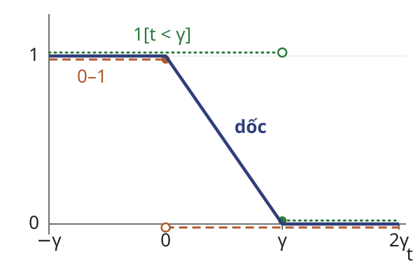

Mạng nơ-ron, năng lực mô hình và tham số hóa thừa
Bài 07
Với quan sát độc lập và lớp chọn trước khi lấy mẫu, độ phức tạp Rademacher của lớp hàm lỗi bị chặn ứng với lớp chứa mô hình do huấn luyện chọn, với xác suất cao, chặn khoảng cách tổng quát hóa, kể cả khi số tham số vượt cỡ mẫu.
Lý thuyết học thống kê · Năm học 2026–2027, học kỳ 1
Khoa Công nghệ thông tin, Trường Đại học Công nghệ, ĐHQGHN
Với lớp nửa không gian afin trong $\mathbb R^p$, chiều VC bằng $p+1$, nên cận của Định lý 03.15 không cho thông tin khi số chiều vượt cỡ mẫu. Cận ổn định của Bài 06 cần hàm lỗi lồi theo tham số, còn hàm lỗi của mạng nơ-ron theo trọng số nói chung không lồi. Độ phức tạp Rademacher đo mức một lớp hàm lỗi khớp được dấu ngẫu nhiên trên chính tập huấn luyện. Định lý 07.11 chặn khoảng cách tổng quát hóa bằng đại lượng này. Với lớp kiến trúc khớp mọi cách gán nhãn, đại lượng bằng một nửa; với lớp tuyến tính bị chặn theo chuẩn, cận theo lề của Hệ quả 07.16 không phụ thuộc số chiều. Các bảo đảm là cấp lớp và không dùng tính lồi.
Nguồn: ghi chú Bài 07, đoạn mở đầu, §10.
Tiên quyết và quy ước
Nhắc lại: Định lý 03.15, (T1), hàm lỗi 0–1, (T5), (M) lớp con đếm được: với xác suất ít nhất $1-\delta$, $\sup_h\lvert L_S(h)-L_D(h)\rvert\le\rho_m=\sqrt{8\ln(4\Pi_{\mathcal H}(2m)/\delta)/m}$, $\Pi_{\mathcal H}$ hàm tăng trưởng.
Mệnh đề 03.9: chiều VC $d(\mathcal H^p_{\mathrm{aff}})=p+1$, $d(\mathcal H^p_{\mathrm{hom}})=p$.
Mệnh đề 04.3, $S$ $r$-đại diện: $L_D(\tilde h)-L^*\le{}$sai số xấp xỉ${}+2r+\operatorname{opt}_S(\tilde h)$; $\tilde h$ hàm trả về, $L^*$ rủi ro tham chiếu.
Bất đẳng thức hợp; Hoeffding (Bổ đề 02.6, Định lý 02.7); Hệ quả 02.10.
Kí hiệu: $h_w(x)=\langle w,x\rangle$, $h_{w,0}=\mathbb 1[h_w\ge0]$, $\tilde y=2y-1$, $\lVert x\rVert\le C_x$.
(M): một lớp con đếm được xấp xỉ lớp theo từng điểm. Bổ đề 02.6 là bổ đề Hoeffding cho một biến bị chặn, Định lý 02.7 là bất đẳng thức Hoeffding. $\operatorname{opt}_S(\tilde h)=L_S(\tilde h)-\min_{\mathcal H}L_S$ là sai số tối ưu thực nghiệm. Bất đẳng thức Hoeffding: với $V_1,\ldots,V_m$ độc lập trong $[a,b]$, xác suất trung bình vượt kì vọng ít nhất $t$ không quá $e^{-2mt^2/(b-a)^2}$; Hệ quả 02.10 đảo cận này thành cận tin cậy cho rủi ro của một hàm cố định trên một tập kiểm tra độc lập. Câu ôn nhanh: (1) $\mathbb E\lvert\sigma_1+\sigma_2+\sigma_3\rvert=1{,}5$, nhỏ hơn $\sqrt3\approx1{,}7321$ theo bất đẳng thức Jensen; (2) $m\le N$ véc-tơ độc lập tuyến tính bị lớp nửa không gian thuần nhất trong $\mathbb R^N$ tách trọn vẹn, và lớp có chiều VC $N$; (3) với $m=200$, $t=\sqrt{\ln40/400}\approx0{,}0961$ cho xác suất $0{,}025$.
Nguồn: ghi chú Bài 07, Kiến thức tiên quyết, Câu hỏi ôn nhanh.
Mục tiêu
Phân biệt năng lực biểu diễn, thống kê, khả năng tối ưu; kiểm mạng ReLU cho hàm Boole.
Tính độ phức tạp Rademacher bằng liệt kê bộ dấu, nối với lỗi khớp nhãn ngẫu nhiên.
Phát biểu, trình bày chứng minh cận theo độ phức tạp Rademacher.
Chứng minh cận cho lớp tuyến tính bị chặn theo chuẩn; tính cận theo lề.
Giải thích bằng ví dụ vai trò của số tham số, chuẩn, lề, cận lớn hơn một.
Mục tiêu 1: một mạng ReLU nhỏ biểu diễn đúng một hàm Boole cho trước. Mục tiêu 2 là độ phức tạp Rademacher thực nghiệm của một lớp nhỏ, và đồng nhất thức nối nó với lỗi nhỏ nhất khi khớp nhãn ngẫu nhiên. Mục tiêu 3 là cận tổng quát hóa với xác suất cao. Mục tiêu 4 gồm chứng minh đầy đủ cho lớp tuyến tính, rồi suy ra cận theo lề và tính nó bằng số. Mục tiêu 5 có ba ý: số tham số không quyết định lỗi kiểm tra; chuẩn và lề cho thêm thông tin; một cận lớn hơn một không cho biết mô hình tốt hay kém.
Nguồn: ghi chú Bài 07, Mục tiêu học tập.
Vấn đề trung tâm
Câu hỏi: đại lượng nào đo được năng lực thống kê của một lớp mạng nơ-ron khi số tham số vượt cỡ mẫu?
Một mạng hai nơ-ron ẩn biểu diễn được phép hoặc loại trừ; số tham số, chiều VC và bán kính VC của lớp kiến trúc trong thí nghiệm như nhau với hai loại nhãn, và bán kính VC lớn hơn $1$.
Độ phức tạp Rademacher bằng một nửa trừ kì vọng của lỗi nhỏ nhất khi khớp nhãn ngẫu nhiên, và bằng một nửa cho lớp khớp mọi cách gán nhãn.
Với quan sát độc lập, hàm lỗi trong $[0,1]$ và lớp chọn trước, nó chặn khoảng cách tổng quát hóa với xác suất cao.
Với lớp tuyến tính bị chặn theo chuẩn (mạng có lớp ẩn cố định), số hạng Rademacher là $2BC_x/(\gamma\sqrt m)$, không phụ thuộc số chiều.
Cận này cho thông tin với $10^5$ đặc trưng nhưng lớn hơn $1$ trong thí nghiệm hai trăm điểm.
Nguồn: ghi chú Bài 07, đoạn mở đầu, §10.
Ví dụ: nhãn thật và nhãn hoán vị
$m=200$ điểm đều trong hình tròn đơn vị; nhãn thật $y=\mathbb 1[x_1+0{,}5x_2\ge0]$.
Lớp nơ-ron ẩn (hidden layer): $N=2000$ nơ-ron ReLU (rectified linear unit) $\psi_j$ rút ngẫu nhiên, cố định.
Lớp nơ-ron ra (output layer): hàm điểm số $f=\frac1{\sqrt N}\sum_jw_j\psi_j$, $\lVert w\rVert$ nhỏ nhất thỏa $f(x_i)=2y_i-1$.
Nhãn hoán vị (permuted labels) của tập huấn luyện.
Nhãn $L_S$ Lỗi kiểm tra $\min$ – $\max$
Thật $0$ $0{,}023$ $0{,}014$ – $0{,}036$ Hoán vị $0$ $0{,}501$ $0{,}480$ – $0{,}512$
Câu hỏi: vì sao lỗi kiểm tra khác nhau?
Ở đây $\psi_j(x)=\operatorname{ReLU}(\langle v_j,x\rangle+b_{1j})$, với $v_j$ đều trên đường tròn đơn vị và $b_{1j}$ đều trên $[-1,1]$; chỉ $2000$ trọng số của lớp ra được huấn luyện. Cột lỗi kiểm tra ghi trung bình và khoảng nhỏ nhất ($\min$) – lớn nhất ($\max$) qua mười hạt giống ngẫu nhiên (random seed), trên $5000$ điểm kiểm tra. Với nhãn hoán vị, nhãn không còn liên hệ với vị trí của điểm, và nhãn kiểm tra cũng được hoán vị, độc lập với tập huấn luyện. Cột $L_S$ là lỗi huấn luyện 0–1, bằng $0$ ở cả hai lượt. Số tham số lớn hơn số quan sát không giải thích được bảng: với nhãn thật, cùng mạng đó có lỗi kiểm tra $0{,}023$. Phép huấn luyện là bình phương tối thiểu chuẩn nhỏ nhất; giao thức đầy đủ ở Phụ lục D của ghi chú.
Nguồn: ghi chú Bài 07, Câu hỏi mở đầu và hai đoạn sau; Phụ lục D.
2. Năng lực biểu diễn và số tham sốMạng ReLU nhỏ biểu diễn được phép hoặc loại trừ, lớp afin thì không; số tham số không phân biệt hai loại nhãn.
năng lực biểu diễn · tham số hóa thừa · nội suy · lớp kiến trúc · đổi tỉ lệ
Lớp nửa không gian afin sai ít nhất một trong bốn điểm của phép hoặc loại trừ; một mạng ReLU với hai nơ-ron ẩn phân lớp đúng cả bốn. Ba câu hỏi về một lớp mạng tách nhau: lớp có chứa hàm tốt không, cần bao nhiêu quan sát, và thuật toán có tìm được hàm đó không. Với lớp mạng của thí nghiệm, số tham số, chiều VC và bán kính VC như nhau với nhãn thật và nhãn hoán vị.
Nguồn: ghi chú Bài 07, §1–§5.
Thiết lập bài toán
$z=(x,y)\in\mathcal X\times\{0,1\}$, $\mathcal X\subseteq\mathbb R^p$, $D$ chưa biết; $S\sim D^m$; tập kiểm tra (test set) độc lập.
$\mathcal H=\{\mathbb 1[f\ge0]\}$, $f$ là hàm điểm số (score function); hàm lỗi 0–1.
Cần chặn $\sup_{h\in\mathcal H}\big(L_D(h)-L_S(h)\big)$; cận này chặn cả rủi ro đầu ra $A(S;\xi)$ của mọi thuật toán.
Giả thiết: (T1) độc lập cùng phân bố; (T3) hàm lỗi trong $[0,1]$; (T5) lớp chọn trước; (M) lớp con đếm được; không cần tính lồi, khác Bài 05–06.
Thuật toán có thể là tối thiểu hóa rủi ro thực nghiệm (ERM), hạ gradient ngẫu nhiên (SGD) trên hàm mục tiêu không lồi hay phép nội suy; $\xi$ là nguồn ngẫu nhiên riêng của nó. Cố định: $D$, $p$, kiến trúc, lớp hàm, $B$, $C_x$, $\gamma$, $\delta$. Ngẫu nhiên theo dữ liệu: $S$ và mọi đại lượng tính từ $S$. Ngẫu nhiên theo $\xi$: khởi tạo, chỉ số của SGD, trọng số lớp ẩn trong thí nghiệm. Khi cố định lớp ẩn, các hàm điểm số của lớp ra lập thành một lớp chọn trước khi lấy mẫu, và kết quả cấp lớp áp dụng có điều kiện theo lớp ẩn. Khác Bài 05–06, hàm lỗi có thể không lồi theo tham số, nên cận ổn định của Bài 06 không dùng được. Đối tượng so sánh $\inf_{h\in\mathcal H}L_D(h)$ chỉ dùng cho rủi ro vượt mức của ERM.
Nguồn: ghi chú Bài 07, §1, §2.
Ví dụ: phép hoặc loại trừ và phân lớp văn bản
Ví dụ 07.1
$\mathcal X=\{0,1\}^2$, $y=x_1\oplus x_2$, phép hoặc loại trừ (exclusive or, XOR); $D$ đều trên bốn quan sát:
$((0,0),0)$, $((1,0),1)$, $((0,1),1)$, $((1,1),0)$.
Mọi hàm của $\mathcal H^2_{\mathrm{aff}}$ sai ít nhất một quan sát; $w=(1,1)$, $b=-\tfrac12$ sai tại $(1,1)$: $\min L_S=\tfrac14$.
Phân lớp văn bản
$p=10^5$ tần suất từ, $\lVert x\rVert\le C_x=1$, $m=10^4$; $d=p>2m$: cận VC không cho thông tin.
Câu hỏi: $w$ của bộ giải, $\lVert w\rVert\le B$, đa số văn bản có lề $\tilde y\langle w,x\rangle\ge\gamma$, $BC_x/\gamma=10$ ($B$, $\gamma$ chọn trước). Bảo đảm nào cho $L_D(h_{w,0})$?
Hai điểm nhãn $0$ nằm trên một đường chéo của hình vuông, hai điểm nhãn $1$ trên đường chéo kia; theo Ví dụ 03.3, Bước 3, không nửa mặt phẳng nào tách hai cặp này. Vì $D$ đều trên bốn quan sát của tập huấn luyện, $L_D=L_S$, nên $\tfrac14$ cũng là rủi ro kì vọng nhỏ nhất của lớp afin. Văn bản được biểu diễn bằng véc-tơ tần suất từ (bag of words) đã chuẩn hóa; $h_{w,0}$ thuộc $\mathcal H^p_{\mathrm{hom}}$, có chiều VC $p$ (Mệnh đề 03.9(b)). Cận VC là cận của Định lý 03.15.
Nguồn: ghi chú Bài 07, §3, Ví dụ 07.1 và khối ứng dụng.
Mạng nơ-ron lan truyền tới
Mạng nơ-ron lan truyền tới (feedforward neural network) ghép nhiều hàm afin, xen giữa bởi một hàm phi tuyến.
Định nghĩa 07.1. Độ sâu (depth) $J$; lớp nơ-ron $j$ có $N_j$ nơ-ron, $N_0=p$, $N_J=1$; độ rộng (width) $N=\max_{1\le j\le J-1}N_j$ ($J\ge2$); hàm kích hoạt (activation function) $\varsigma$, ở đây ReLU.
$\theta=(\Theta_1,b_1,\ldots,\Theta_J,b_J)$, $\Theta_j\in\mathbb R^{N_j\times N_{j-1}}$, $b_j\in\mathbb R^{N_j}$: $\sum_jN_j(N_{j-1}+1)$ tham số; $9$ khi $p=J=N_1=2$.
$$\begin{aligned}a_0&=x,\quad a_j=\varsigma(\Theta_ja_{j-1}+b_j)\ \ (1\le j<J),\\ f_\theta(x)&=\Theta_Ja_{J-1}+b_J,\quad h_\theta=\mathbb 1[f_\theta\ge0].\end{aligned}$$
Các lớp nơ-ron $1,\ldots,J-1$ là lớp ẩn, lớp $J$ là lớp ra; lớp ra không có hàm kích hoạt, nên $f_\theta(x)$ là một số thực. Chữ "lớp nơ-ron" phân biệt với lớp giả thuyết. Với $J=1$, $h_\theta=h_{w,b}$ với $w=\Theta_1^\top$, $b=b_1$: lớp nửa không gian afin là lớp mạng độ sâu $1$. Với $J=2$, $f_\theta(x)=\Theta_2\,\varsigma(\Theta_1x+b_1)+b_2$, và kiến trúc $p=J=N_1=2$ có $2\cdot3+1\cdot3=9$ tham số. Hàm phân lớp $\mathbb 1[x\in\mathbb Q]$ trên $\mathbb R$ không thuộc lớp mạng ReLU nào: $f_\theta$ liên tục nên $\{f_\theta\ge0\}$ là tập đóng, còn $\mathbb Q$ thì không.
Nguồn: ghi chú Bài 07, §4, Định nghĩa 07.1 và hai đoạn sau.
Mạng ReLU cho phép hoặc loại trừ
Trực quan. Hai nơ-ron ẩn cùng đọc $s=x_1+x_2$; nơ-ron thứ hai chỉ bật khi $s>1$.
Nơ-ron này trừ gấp đôi phần vượt, kéo điểm số tại $s=2$ về mức tại $s=0$.
Mệnh đề 07.2. Giả thiết: $p=2$, $J=2$, $N_1=2$, ReLU; $\Theta_1$ có hai hàng $(1,1)$, $b_1=(0,-1)^\top$, $\Theta_2=(1,-2)$, $b_2=-\tfrac12$; $x\in\{0,1\}^2$.
Bảo đảm: tất định, chỉ về bốn điểm của $\{0,1\}^2$:
$$\begin{aligned}f_\theta(x)={}&\operatorname{ReLU}(s)\\&-2\operatorname{ReLU}(s-1)-\tfrac12\end{aligned}$$
nhận $-\tfrac12$, $\tfrac12$, $\tfrac12$, $-\tfrac12$ tại $(0,0)$, $(1,0)$, $(0,1)$, $(1,1)$, nên $h_\theta(x)=x_1\oplus x_2$.
Hai hàng của $\Theta_1$ bằng nhau, nên hai nơ-ron ẩn nhận cùng đầu vào $s$ và chỉ khác hệ số tự do: nơ-ron thứ nhất cho $\operatorname{ReLU}(s)$, nơ-ron thứ hai cho $\operatorname{ReLU}(s-1)$, nhân với $-2$ ở lớp ra. Hệ số tự do $-\tfrac12$ của lớp ra đặt ngưỡng của quy ước $f_\theta\ge0$ giữa hai giá trị $-\tfrac12$ và $\tfrac12$. Bảo đảm chỉ nói về bốn điểm; mạng cũng gán nhãn cho mọi điểm khác của mặt phẳng.
Nguồn: ghi chú Bài 07, §4, Mệnh đề 07.2.
Ý tưởng chứng minh: mạng ReLU cho phép hoặc loại trừ
(hai hàng của $\Theta_1$ bằng nhau) $\Theta_1x+b_1=(s,\ s-1)^\top$, nên $f_\theta$ chỉ phụ thuộc $s$.
Trên $\{0,1\}^2$, $s\in\{0,1,2\}$, với $f_\theta=-\tfrac12;\ \tfrac12;\ 2-2-\tfrac12=-\tfrac12$.
$s=1$ khi và chỉ khi $x_1\oplus x_2=1$.
Ngoài tập huấn luyện: tại $(\tfrac12,\tfrac12)$, $s=1$, $f_\theta=\tfrac12$, nên $h_\theta=1$.
Với $J=1$, $h_\theta=h_{w,b}$ sai ít nhất một quan sát (Ví dụ 07.1).
Kỹ thuật. Các hàng trùng nhau của $\Theta_1$ đưa hàm hai biến về hàm một biến $s$.
Lộ trình gồm ba phép tính, không cần bất đẳng thức. Ở bước 2, với $s=2$ cả hai nơ-ron bật: $\operatorname{ReLU}(2)=2$ và $2\operatorname{ReLU}(1)=2$ triệt tiêu nhau, còn lại $-\tfrac12$. Điểm $(\tfrac12,\tfrac12)$ không có trong tập huấn luyện nhưng được gán nhãn $1$: phân lớp đúng bốn điểm chỉ xác định hàm phân lớp trên bốn điểm đó. Lớp ẩn cần thiết vì với độ sâu $1$, mạng là một hàm phân lớp afin, và theo Ví dụ 07.1 nó sai ít nhất một trong bốn quan sát.
Nguồn: ghi chú Bài 07, chứng minh Mệnh đề 07.2 và đoạn sau; Định nghĩa 07.1, ví dụ đầu.
Ba câu hỏi về một lớp mạng
Nhận xét 07.3 (xấp xỉ phổ quát, universal approximation). Mạng sigmoid xấp xỉ đều tới $\epsilon$ mọi hàm Lipschitz $[-1,1]^p\to[-1,1]$; số nơ-ron tối thiểu mũ theo $p$.
Câu hỏi Mệnh đề 04.3
năng lực biểu diễn (expressivity) sai số xấp xỉ năng lực thống kê (statistical capacity) $2r$ khả năng tối ưu sai số tối ưu thực nghiệm
Kết quả chỉ chặn số hạng đầu.
Trên Ví dụ 07.1, rủi ro tham chiếu $L^*=0$ vì nhãn là hàm tất định của $x$; sai số xấp xỉ bằng $0$ với mạng hai nơ-ron ẩn và $\tfrac14$ với lớp afin. Với kích hoạt dấu, mọi hàm Boole trên $\{\pm1\}^p$ có một mạng độ sâu $2$, và một kiến trúc mà lớp mạng của nó chứa mọi hàm Boole này cần số nơ-ron ít nhất mũ theo $p$ (UML §20.3). Các kết quả này không cho biết cần bao nhiêu quan sát hay thuật toán nào tìm được hàm tốt. Số hạng thứ hai, khi $S$ là $r$-đại diện, đo năng lực thống kê. Số hạng thứ ba là sai số tối ưu: với kích hoạt dấu, ba nơ-ron ẩn và một nơ-ron hằng, tìm nghiệm ERM đã là bài toán NP-khó (NP-hard) (UML §20.5).
Nguồn: ghi chú Bài 07, Nhận xét 07.3 và đoạn sau; Mệnh đề 07.2, câu cuối chứng minh; UML §20.3, §20.5.
Bài tập: hàm mục tiêu không lồi
Bài tập 07.5(c). Bốn quan sát của Ví dụ 07.1, $\tilde y\in\{\pm1\}$, kiến trúc và tham số $\theta$ của Mệnh đề 07.2: $F(\theta)=\tfrac14\sum_{i=1}^4\big(f_\theta(x_i)-\tilde y_i/2\big)^2$.
Câu hỏi: $\theta_{\mathrm{swap}}$ đổi chỗ hai nơ-ron ẩn của $\theta$; chứng minh $F(\theta_{\mathrm{swap}})=0$, tính $F(\theta_{\mathrm{mid}})$ với $\theta_{\mathrm{mid}}=\tfrac12(\theta+\theta_{\mathrm{swap}})$, và kết luận về tính lồi của $F$.
Lời giải: đổi thứ tự hai số hạng: $f_{\theta_{\mathrm{swap}}}=f_\theta$, nên $F(\theta_{\mathrm{swap}})=F(\theta)=0$ vì $f_\theta(x_i)=\tilde y_i/2$, $i=1,\ldots,4$.
$b_1=(-\tfrac12,-\tfrac12)^\top$, $\Theta_2=(-\tfrac12,-\tfrac12)$: $f_{\theta_{\mathrm{mid}}}=-\operatorname{ReLU}(s-\tfrac12)-\tfrac12$; hiệu với $\tilde y_i/2$: $0;\ -\tfrac32;\ -\tfrac32;\ -\tfrac32$.
$F(\theta_{\mathrm{mid}})=27/16>0=\tfrac12F(\theta)+\tfrac12F(\theta_{\mathrm{swap}})$: $F$ không lồi.
Đổi chỗ hai nơ-ron ẩn nghĩa là đổi hai hàng của $\Theta_1$, hai tọa độ của $b_1$ và hai tọa độ của $\Theta_2$. Hai hàng của $\Theta_1$ đều bằng $(1,1)$, nên $\theta_{\mathrm{swap}}$ có $b_1=(-1,0)^\top$, $\Theta_2=(-2,1)$, $b_2=-\tfrac12$. Tại trung điểm, hai nơ-ron ẩn cùng tính $\operatorname{ReLU}(s-\tfrac12)$, và hàm điểm số nhận $-\tfrac12$, $-1$, $-1$, $-2$ tại bốn điểm; trung điểm của hai nghiệm khớp đúng sai hai trong bốn quan sát. Với hàm lồi, giá trị tại trung điểm không vượt trung bình giá trị ở hai đầu, ở đây bằng $0$. Các bảo đảm hội tụ của Bài 05 cho hàm lồi không áp dụng cho hàm mục tiêu này, như Ví dụ 05.10. Ở phần (b) của bài tập, hạ gradient khởi tạo tại $0$ giữ $\Theta_1$, $b_1$, $\Theta_2$ bằng $0$ ở mọi bước, và hàm trả về sai một nửa số quan sát, dù lớp chứa nghiệm khớp đúng.
Nguồn: tệp bài tập, Bài tập 07.5(b), (c) và lời giải; ghi chú Bài 07, Nhận xét 07.3.
Tham số hóa thừa và nội suy
Thước đo đầu tiên cho số hạng $2r$: số tham số.
Định nghĩa 07.4. $P$: số tham số chọn theo dữ liệu; tham số hóa thừa (overparameterization): $P>m$.
Nhắc lại: Nhận xét 03.10, $\mathcal H_{\sin}$ có $P=1$, $d=\infty$; lớp (iii) $p$ tham số, ba hàm.
Nội suy (interpolation): $\exists\theta$, $h_\theta(x_i)=y_i\ \forall i$; nội suy mọi cách gán nhãn: $\{h_\theta\}$ tách trọn vẹn $(x_1,\ldots,x_m)$.
Tham số hóa thừa và nội suy không kéo theo nhau.
Nếu lớp phân lớp đúng mọi cách gán nhãn của tập huấn luyện, lỗi huấn luyện bằng $0$ không phân biệt nhãn mang thông tin với nhãn không mang thông tin. Số hạng $2r$ của Mệnh đề 04.3 đo năng lực thống kê, và số tham số là đại lượng đầu tiên để đo kích thước của lớp. Tham số rút trước khi lấy mẫu rồi giữ cố định không được đếm. Tham số hóa thừa là một phép đếm, phụ thuộc $m$: mạng của thí nghiệm có $P=2000>m=200$, nhưng không tham số hóa thừa với $m=10^5$. Nội suy là tính chất của lớp trên một bộ điểm. Lớp một tham số $\mathcal H_{\sin}$ tách trọn vẹn những bộ điểm lớn tùy ý; lớp $p$ tham số chỉ gồm ba hàm và không cho nhãn $(0,0)$ trên hai điểm $x_1<0<x_2$.
Nguồn: ghi chú Bài 07, §5, Định nghĩa 07.4 và hai đoạn sau.
Lớp kiến trúc và mô hình do huấn luyện chọn
Bảo đảm nói về một lớp hoặc riêng hàm được chọn.
Định nghĩa 07.5. Lớp kiến trúc (architecture class) $\mathcal H_{J,N}=\{h_\theta:\theta\in\mathbb R^P\}$, chọn trước.
Lớp con bị chặn theo chuẩn (norm-bounded class) $\mathcal H_{J,N}(B)=\{h_\theta:\lVert\theta\rVert\le B\}$, $B$ chọn trước.
Mô hình do huấn luyện chọn (model selected by training) $h_{\hat\theta}$, $\hat\theta=A(S;\xi)$, phụ thuộc $S$.
Bảo đảm cấp lớp (class-level) đúng cho $h_{\hat\theta}$ khi $\lVert\hat\theta\rVert\le B$; lấy $B=\lVert\hat\theta\rVert$ thì lớp phụ thuộc $S$, trái với (T5).
Lớp kiến trúc gồm mọi hàm mà kiến trúc biểu diễn được; lớp hàm điểm số tương ứng là $\mathcal F_{J,N}$. Bảo đảm cấp lớp của Bài 02–03 đúng đồng thời cho mọi hàm của một lớp cố định trước khi lấy mẫu, nên đúng cho hàm do huấn luyện chọn mỗi khi hàm đó thuộc lớp, bất kể thuật toán. Bảo đảm này không nói thuật toán chọn hàm nào; đó là việc của bảo đảm cấp thuật toán, như ở Bài 06. Ví dụ 03.8 lập một lớp sau khi xem tập huấn luyện rồi dùng cận cho lớp cố định; coi quả cầu bán kính $\lVert\hat\theta\rVert$ là lớp chọn trước lặp lại lỗi đó.
Nguồn: ghi chú Bài 07, §5, Định nghĩa 07.5 và hai đoạn sau.
Ví dụ: đổi tỉ lệ hai lớp nơ-ron kề nhau
Ví dụ 07.2. Mạng của Mệnh đề 07.2; đổi tỉ lệ (rescaling) với $c>0$: $c\Theta_1$, $cb_1$, $\Theta_2/c$, $b_2=-\tfrac12$.Tính thuần nhất dương (positive homogeneity) $\operatorname{ReLU}(ct)=c\operatorname{ReLU}(t)$: cùng hàm điểm số trên $\mathbb R^2$.
Tổng bình phương tham số $5c^2+5/c^2+\tfrac14$: $10{,}25$ ($c=1$); $500{,}30$ ($c=10$, $c=0{,}1$).
Chuẩn phổ (spectral norm): $\lVert c\Theta_1\rVert_{\mathrm{op}}=2c$, $\lVert\Theta_2/c\rVert_{\mathrm{op}}=\sqrt5/c$; tích $2\sqrt5\approx4{,}4721$ với mọi $c$.
Diễn giải: chuẩn tham số $\sqrt{10{,}25}\approx3{,}20$ hay $\sqrt{500{,}30}\approx22{,}37$ cho cùng một hàm, nên không xác định từ hàm; tích chuẩn phổ không đổi.
Tổng bình phương dùng chuẩn Frobenius: $\lVert c\Theta_1\rVert_F^2+\lVert cb_1\rVert^2=c^2(4+1)$ và $\lVert\Theta_2/c\rVert^2=5/c^2$; giá trị nhỏ nhất $10{,}25$ tại $c=1$ theo bất đẳng thức trung bình cộng–trung bình nhân. Chuẩn phổ là $\max_{\lVert u\rVert=1}\lVert\Theta u\rVert$; theo Cauchy–Schwarz, dấu bằng khi $u$ cùng hướng $(1,1)$ hay $(1,-2)$. Hai chuẩn $3{,}20$ và $22{,}37$ thuộc cùng một hàm, nên chuẩn của toàn bộ véc-tơ tham số không xác định được từ hàm. Một đại lượng gắn với hàm phải bất biến khi đổi tỉ lệ, như tích các chuẩn phổ.
Nguồn: ghi chú Bài 07, §5, Ví dụ 07.2.
Ví dụ: lớp kiến trúc của thí nghiệm mở đầu
Ví dụ 07.3. Hàng $j$ của $\Theta_1$ là $v_j^\top$, $v_j$ đều trên đường tròn đơn vị, $b_{1j}$ đều trên $[-1,1]$, độc lập với $S$.Đặc trưng ngẫu nhiên (random features) $\chi(x)=\operatorname{ReLU}(\Theta_1x+b_1)/\sqrt N$; $f_\theta=\langle w,\chi\rangle$; $P=2000$, $P/m=10$.
Nghiệm nội suy chuẩn nhỏ nhất (minimum-norm interpolant) $\hat w=\arg\min\{\lVert w\rVert:\langle w,\chi(x_i)\rangle=\tilde y_i\ \forall i\}$.
Ma trận các hàng $\chi(x_i)^\top$ có hạng $200$: $\mathcal H_{2,2000}$ tách trọn vẹn $200$ điểm, $m\le d\le N$.
Lặp mỗi điểm hai lần: $\Pi(2m)\ge2^m$, $\rho_m\ge\sqrt{8\ln2}\approx2{,}35>1$.
Diễn giải: $P$, $d$, $\rho_m$ như nhau với hai loại nhãn.
Có $6000$ tham số lớp ẩn cố định và $b_2=0$; chỉ $w$ được chọn theo dữ liệu, nên $P=N$. Với lớp ẩn cố định, lớp kiến trúc $\mathcal H_{2,2000}$ là lớp nửa không gian thuần nhất trên $\chi(x)$, và $d\le N$ theo Mệnh đề 03.9(b). Hạng $200$ cho nghiệm của mọi hệ $\langle w,\chi(x_i)\rangle=\tilde y_i$, như câu ôn nhanh (2) ở trang tiên quyết. Hai bản sao của một điểm nhận cùng nhãn, nên trên bộ $2m$ điểm lớp thực hiện đúng $2^m$ cách gán nhãn; vì $4/\delta>1$, bán kính VC ít nhất $\sqrt{8\ln2}$. Nhận xét 07.6 (đọc thêm, UML §20.4): với kích hoạt dấu và $P$ trọng số được huấn luyện, kể cả hệ số tự do, hàm tăng trưởng không quá $(em)^P$, chiều VC là $O(P\ln P)$; cận chỉ phụ thuộc đồ thị của mạng, nên cũng không phân biệt hai loại nhãn.
Nguồn: ghi chú Bài 07, §5, Ví dụ 07.3, Nhận xét 07.6; Phụ lục D.
3. Độ phức tạp RademacherMức một lớp khớp được nhãn ngẫu nhiên đo năng lực thống kê, và bằng một nửa khi lớp khớp mọi cách gán nhãn.
biến Rademacher · độ phức tạp Rademacher thực nghiệm · nhãn ngẫu nhiên · lỗi khớp
Chiều VC chỉ xác định cho lớp hàm phân lớp, và với lớp kiến trúc của thí nghiệm nó không phân biệt hai loại nhãn. Độ phức tạp Rademacher xác định cho cả lớp hàm giá trị thực, như lớp hàm điểm số và lớp hàm lỗi, và nhỏ đi khi lớp bị chặn theo chuẩn. Trên ba điểm, nó tính được bằng cách liệt kê tám bộ dấu; với lớp hàm phân lớp, nó bằng một nửa trừ kì vọng của lỗi nhỏ nhất khi khớp nhãn ngẫu nhiên. Với lớp kiến trúc của thí nghiệm, độ phức tạp bằng một nửa với cả hai loại nhãn.
Nguồn: ghi chú Bài 07, §5 đoạn cuối, §6.
Độ phức tạp Rademacher
Lớp hàm giá trị thực cần một đại lượng thay chiều VC; đại lượng này nhỏ đi khi lớp bị chặn theo chuẩn.
Trực quan. Mỗi bộ dấu: chọn hàm tương quan nhất, rồi lấy trung bình.
Định nghĩa 07.7. Biến Rademacher (Rademacher variables) $\sigma_i$ độc lập, $\Pr(\sigma_i=\pm1)=\tfrac12$; $A\subset\mathbb R^m$ khác rỗng, bị chặn:
$$\widehat{\mathfrak R}(A)=\mathbb E_\sigma\Big[\sup_{a\in A}\tfrac1m\textstyle\sum_{i=1}^m\sigma_ia_i\Big].$$
$\widehat{\mathfrak R}_S(\mathcal F)=\widehat{\mathfrak R}(\mathcal F\circ S)$, $\mathfrak R_m(\mathcal F)=\mathbb E_S\widehat{\mathfrak R}_S(\mathcal F)$: độ phức tạp thực nghiệm (empirical), tổng thể (population).
$0\le\widehat{\mathfrak R}(A)\le\sup_{a\in A}\max_i\lvert a_i\rvert$.
Bước 2 của chứng minh Định lý 03.15 đưa vào các dấu ngẫu nhiên, Bước 3 đếm các cách gán nhãn trên mẫu gộp; với lớp hàm giá trị thực không còn phép đếm như vậy. $\mathcal F\circ S$ là tập véc-tơ giá trị $(f(\omega_1),\ldots,f(\omega_m))$ trên tập huấn luyện; với lớp hàm điểm số, các điểm là $X_1,\ldots,X_m$, nên độ phức tạp thực nghiệm không phụ thuộc nhãn; nó còn ngẫu nhiên theo $S$, còn $\mathfrak R_m$ là một số. Vế trái của cận đơn giản đúng vì cận trên đúng không nhỏ hơn giá trị tại một véc-tơ cố định, có kì vọng $0$. Định nghĩa không có trị tuyệt đối, như UML. Dấu ngẫu nhiên đứng thay cho nhãn thật $\tilde y_i$: $\sup_f\frac1m\sum_i\tilde y_if(x_i)$ đo mức lớp khớp nhãn của bài toán, còn $\sigma_i$ độc lập với dữ liệu, nên độ phức tạp đo khả năng khớp của riêng lớp.
Nguồn: ghi chú Bài 07, §6, Định nghĩa 07.7 và ba đoạn sau.
Ví dụ: bốn lớp trên ba điểm
Ví dụ 07.4. $m=3$; lớp là tập $A\subset\mathbb R^3$ các véc-tơ giá trị; $\widehat{\mathfrak R}(A)={}$tổng$/24$.
Lớp Số véc-tơ $\sum_\sigma\max_a\sum_i\sigma_ia_i$ $\widehat{\mathfrak R}(A)$
một phần tử $(0{,}3;0{,}7;0{,}2)$ $1$ $0$ $0$ hai hàm $(1,0,0)$, $(0,1,1)$ $2$ $6$ $1/4$ hàm ngưỡng, $x_1<x_2<x_3$ $4$ $8$ $1/3$ mọi cách gán nhãn $\{0,1\}^3$ $8$ $12$ $1/2$
Diễn giải: $1$, $2$, $4$, $8$ véc-tơ cho $0$, $1/4$, $1/3$, $1/2$; $\{0,1\}^3$ khớp mọi bộ dấu.
Bổ đề 07.8. Giả thiết: $A\subset\mathbb R^m$ khác rỗng, bị chặn, $c\in\mathbb R$, $\bar a\in\mathbb R^m$. Bảo đảm: tất định, $\widehat{\mathfrak R}(cA+\bar a)=\lvert c\rvert\,\widehat{\mathfrak R}(A)$.
Công thức tính: $\widehat{\mathfrak R}(A)=\frac1{24}\sum_\sigma\max_{a\in A}\sum_i\sigma_ia_i$, tức tổng tám giá trị lớn nhất chia $24$. Với hai hàm, tổng có dấu là $\sigma_1$ và $\sigma_2+\sigma_3$; theo thứ tự $(-,-,-),(-,-,+),\ldots,(+,+,+)$, giá trị lớn nhất là $-1,0,0,2,1,1,1,2$, tổng $6$. Lớp hàm ngưỡng cho $0,1,0,2,0,1,1,3$, tổng $8$. Bốn véc-tơ của lớp hàm ngưỡng là $(0,0,0)$, $(0,0,1)$, $(0,1,1)$, $(1,1,1)$. Với $\{0,1\}^3$, véc-tơ tốt nhất đặt $a_i=1$ đúng tại các dấu dương, nên giá trị lớn nhất bằng số dấu dương, có kì vọng $\tfrac32$. Lớp một phần tử không có phép chọn, nên tổng có dấu có kì vọng $0$. Số véc-tơ không tự quyết định độ phức tạp: lớp $0{,}1\cdot\{0,1\}^3$ có $8$ véc-tơ và độ phức tạp $0{,}05$ theo Bổ đề 07.8. Bổ đề này (dùng cho cận hai phía, bổ đề co và Ví dụ 07.11): cộng hằng số vào hàm lỗi hay đổi dấu nó không đổi độ phức tạp.
Nguồn: ghi chú Bài 07, §6, Bổ đề 07.8, Ví dụ 07.4.
Độ phức tạp Rademacher và lỗi khớp nhãn ngẫu nhiên
Trực quan. Lớp chọn, với mỗi bộ nhãn ngẫu nhiên, hàm sai ít nhất.
Mệnh đề 07.9. Giả thiết: $x_1,\ldots,x_m$ cố định; $\mathcal H\ne\varnothing$, $h:\mathcal X\to\{0,1\}$; nhãn ngẫu nhiên (random labels) $\tau_i$ độc lập, đều trên $\{0,1\}$; $\operatorname{err}_\tau(h)=\tfrac1m\sum_i\mathbb 1[h(x_i)\ne\tau_i]$.
Bảo đảm: tất định; (a) $\widehat{\mathfrak R}_{x_{1:m}}(\mathcal H)=\tfrac12-\mathbb E_\tau\min_{h\in\mathcal H}\operatorname{err}_\tau(h)$;
(b) với mọi nhãn cố định, lớp hàm lỗi (loss class) 0–1 có cùng giá trị;
(c) $\widehat{\mathfrak R}_{x_{1:m}}(\mathcal H)\le\tfrac12$, bằng $\tfrac12$ khi và chỉ khi $\mathcal H$ tách trọn vẹn $x_{1:m}$.
Một hàm cố định sai trung bình nửa số nhãn ngẫu nhiên; lớp gồm nhiều hàm chọn, với mỗi bộ nhãn, hàm sai ít nhất, và phần lỗi giảm xuống dưới $\tfrac12$ là độ phức tạp. Kì vọng chỉ lấy theo $\tau$ hay $\sigma$, và bộ điểm được phép có điểm lặp. Ở (b), lớp hàm lỗi là $\mathcal G=\{(x,y)\mapsto\mathbb 1[h(x)\ne y]:h\in\mathcal H\}$, xét trên $z_i=(x_i,y_i)$ với nhãn $y_i$ cố định; độ phức tạp của nó bằng độ phức tạp của $\mathcal H$ trên các $x_i$. Cực biên: lớp một phần tử cho $0$; lớp tách trọn vẹn bộ điểm khớp đúng mọi bộ nhãn ngẫu nhiên và đạt $\tfrac12$.
Nguồn: ghi chú Bài 07, §6, Mệnh đề 07.9.
Ý tưởng chứng minh: độ phức tạp Rademacher và lỗi khớp nhãn ngẫu nhiên
($h$ nhận giá trị trong $\{0,1\}$) $\tau_i=(1+\sigma_i)/2$; với $h_i\in\{0,1\}$, $\sigma_ih_i=\tau_i-\mathbb 1[h_i\ne\tau_i]$ (bốn trường hợp).
(a) Lấy trung bình theo $i$: cận trên đúng theo $h$ bằng $\tfrac1m\sum_i\tau_i-\min_h\operatorname{err}_\tau(h)$; lấy kì vọng, $\mathbb E\tau_i=\tfrac12$.
(b) $\mathbb 1[h\ne y]=h+y-2hy$; $\sigma_i(1-2y_i)$ lại là biến Rademacher.
(c) Lỗi nhỏ nhất $\ge0$; mỗi $\tau$ có xác suất $2^{-m}>0$.
Kỹ thuật. Đổi biến giữa dấu và nhãn ngẫu nhiên, $\sigma_i=2\tau_i-1$.
Bốn trường hợp của bước 1: với $(\tau_i,h_i)$ bằng $(1,1)$, $(1,0)$, $(0,1)$, $(0,0)$, hai vế lần lượt bằng $1$, $0$, $-1$, $0$; với $h$ nhận giá trị thực, đẳng thức này không còn. Ở bước 2, cận trên đúng theo $h$ bằng $\tfrac1m\sum_i\tau_i$ trừ lỗi nhỏ nhất, và lỗi nhỏ nhất đạt được vì $\mathcal H$ chỉ tạo hữu hạn véc-tơ trên $m$ điểm. Ở bước 3, số hạng $\sigma_iy_i$ không phụ thuộc $h$ và có kì vọng $0$; vì $1-2y_i\in\{\pm1\}$ cố định, nhân $\sigma_i$ với nó cho lại các biến Rademacher, nên nhãn biến mất khỏi độ phức tạp. Ở bước 4, dấu bằng cần lỗi nhỏ nhất bằng $0$ với mọi $\tau$, vì mỗi $\tau$ có xác suất dương, tức lớp thực hiện mọi cách gán nhãn. Độ phức tạp của lớp hàm lỗi 0–1 đo mức lớp khớp được nhãn không mang thông tin trên chính các điểm của tập huấn luyện.
Nguồn: ghi chú Bài 07, chứng minh Mệnh đề 07.9.
Ví dụ: lớp khớp mọi cách gán nhãn
Ví dụ 07.5. Lớp kiến trúc $\mathcal H_{2,2000}$ tách trọn vẹn $200$ điểm huấn luyện: $\widehat{\mathfrak R}=\tfrac12$ (Mệnh đề 07.9(c)).Theo Mệnh đề 07.9(b): lớp hàm lỗi 0–1 có độ phức tạp $\tfrac12$ với nhãn thật và với nhãn hoán vị.
$\mathcal H_{\sin}$: $P=1$, tách trọn vẹn $\{2^{-1},\ldots,2^{-m}\}$ với mọi $m$: $\widehat{\mathfrak R}=\tfrac12$.
Diễn giải: $P=1$ và $P=2000$ cho cùng độ phức tạp $\tfrac12$: số tham số không xác định độ phức tạp.
Lớp kiến trúc tách trọn vẹn tập huấn luyện trong cả mười lần chạy, vì ma trận đặc trưng có hạng $200$. Theo (b), giá trị $\tfrac12$ của lớp hàm lỗi không đổi khi thay nhãn thật bằng nhãn hoán vị: đại lượng của lớp không thấy nhãn. Lớp $\mathcal H_{\sin}$ của Nhận xét 03.10(ii) có một tham số nhưng cũng đạt mức lớn nhất trên các điểm $2^{-1},\ldots,2^{-m}$, như số tham số không xác định chiều VC.
Nguồn: ghi chú Bài 07, §6, Ví dụ 07.5.
Bài tập: hai hàm phân lớp và nhãn ngẫu nhiên
Bài tập 07.2(c). Hai hàm phân lớp $h_a$, $h_{a'}$ có giá trị $a=(1,0,0)$, $a'=(0,1,1)$ trên ba điểm.
Câu hỏi: tính $\mathbb E_\tau\min\operatorname{err}_\tau$ bằng cách liệt kê tám giá trị của $\tau$, và kiểm Mệnh đề 07.9(a).
Lời giải: số điểm sai theo $\tau$:
$\tau$ $000$ $001$ $010$ $011$ $100$ $101$ $110$ $111$
$h_a$ $1$ $2$ $2$ $3$ $0$ $1$ $1$ $2$ $h_{a'}$ $2$ $1$ $1$ $0$ $3$ $2$ $2$ $1$ nhỏ nhất $1$ $1$ $1$ $0$ $0$ $1$ $1$ $1$
Tổng hàng cuối $6$: $\mathbb E_\tau\min\operatorname{err}_\tau=6/24$; $1/2-1/4=1/4$ (Ví dụ 07.4).
Cột $001$ là $\tau=(0,0,1)$, tương tự cho các cột khác. Hai phần đầu của Bài tập 07.2(c) chứng minh $\widehat{\mathfrak R}(\{a,a'\})=\frac1{2m}\mathbb E\lvert\sum_i\sigma_i(a_i-a'_i)\rvert$ và áp dụng nó: với $a-a'=(1,-1,-1)$, kì vọng của trị tuyệt đối bằng $1{,}5$ theo câu ôn nhanh (1), nên độ phức tạp bằng $1{,}5/6=\tfrac14$. Mỗi ô của bảng là số điểm sai của một hàm với một bộ nhãn; hàng cuối lấy hàm sai ít hơn. Một hàm cố định sai trung bình $\tfrac12$; phần chênh $\tfrac14$ là độ phức tạp. Hai bộ nhãn $(0,1,1)$ và $(1,0,0)$ được khớp đúng, vì đó là chính hai véc-tơ của lớp.
Nguồn: tệp bài tập, Bài tập 07.2(c) và lời giải; ghi chú Bài 07, Mệnh đề 07.9, Ví dụ 07.4.
4. Cận tổng quát hóa theo độ phức tạp RademacherVới lớp hàm lỗi bị chặn, chọn trước, độ phức tạp Rademacher thực nghiệm chặn khoảng cách tổng quát hóa với xác suất cao.
bất đẳng thức McDiarmid · mẫu bóng · cận phụ thuộc dữ liệu · cận không cho thông tin
Định lý 07.11 chặn khoảng cách tổng quát hóa của mọi hàm trong một lớp hàm lỗi chọn trước khi lấy mẫu bằng độ phức tạp Rademacher. Chứng minh dùng lại mẫu bóng của Bài 03 và thay bất đẳng thức Hoeffding bằng một bất đẳng thức tập trung cho chính cận trên đúng theo lớp. Với lớp kiến trúc của thí nghiệm, độ phức tạp một nửa cho một cận lớn hơn một.
Nguồn: ghi chú Bài 07, §7.
Bất đẳng thức McDiarmid
Cận trên đúng theo lớp hàm lỗi không là trung bình, nên Hoeffding không áp dụng.
Trực quan. Biết thêm $V_i$, kì vọng có điều kiện của $Q$ dịch $\le c_i$; bổ đề Hoeffding chặn từng bước.
Bổ đề 07.10 (McDiarmid's inequality). Giả thiết: $V_1,\ldots,V_m$ độc lập, $V_i\in\mathcal V_i$; $Q$ đo được; $\lvert Q(v)-Q(v')\rvert\le c_i$ khi $v$, $v'$ chỉ khác tọa độ $i$.
Bảo đảm: với mọi $t>0$, $\Pr\big(Q-\mathbb EQ\ge t\big)\le\exp\big(-2t^2/\sum_ic_i^2\big).$ Đuôi dưới cũng vậy.
Bổ đề còn gọi là bất đẳng thức sai phân bị chặn (bounded differences inequality); giả thiết thứ ba là điều kiện sai phân bị chặn. Các $V_i$ không cần cùng phân bố. Với $Q$ là trung bình của $m$ biến trong $[a,b]$, đổi một biến làm $Q$ đổi không quá $(b-a)/m$, và bổ đề cho đúng Định lý 02.7(a), (b); ở đây $Q$ có thể là một cận trên đúng theo lớp, như $\Psi$. Chứng minh ở Phụ lục A: viết $Q-\mathbb EQ$ thành tổng các bước tăng của martingale Doob (Doob martingale) khi lần lượt biết $V_1,V_2,\ldots$; mỗi bước tăng có kì vọng có điều kiện $0$ và nằm trong một đoạn dài không quá $c_k$; bổ đề Hoeffding chặn hàm sinh mô-men của từng bước, nhân các cận lại rồi dùng phương pháp Chernoff. Hằng số $2$ trong số mũ đến từ độ dài $c_k$ của đoạn.
Nguồn: ghi chú Bài 07, §7, Bổ đề 07.10 và đoạn sau; Phụ lục A.
Cận theo độ phức tạp Rademacher thực nghiệm
Trực quan. $\widehat{\mathfrak R}_S=\tfrac12$ cho $2\widehat{\mathfrak R}_S=1$, bằng rủi ro 0–1 lớn nhất: cận không cho thông tin.
Định lý 07.11. Giả thiết: (T1); lớp hàm lỗi $\mathcal G$ đo được, (T3), (T5), (M); $\delta\in(0,1)$. Kí hiệu: $L_D(g)=\mathbb E_{Z\sim D}g(Z)$, $L_S(g)=\tfrac1m\sum_ig(Z_i)$.
Bảo đảm: (a) theo kì vọng: $\mathbb E_S\sup_{g\in\mathcal G}\big(L_D(g)-L_S(g)\big)\le2\,\mathfrak R_m(\mathcal G)$;
(b) với xác suất ít nhất $1-\delta$, đồng thời cho mọi $g\in\mathcal G$:
$$L_D(g)\le L_S(g)+2\widehat{\mathfrak R}_S(\mathcal G)+3\sqrt{\frac{\ln(2/\delta)}{2m}}.$$
Cận phụ thuộc dữ liệu (data-dependent bound), cấp lớp.
Với $\delta=0{,}05$: trong khoảng 95 trên 100 lần lấy tập huấn luyện, bất đẳng thức (b) đúng đồng thời cho mọi $g$, kể cả hàm chọn theo tập huấn luyện. (a) dùng độ phức tạp tổng thể, không tính được từ dữ liệu; (b) là bảo đảm xác suất cao với độ phức tạp thực nghiệm, tính được từ tập huấn luyện; số hạng tin cậy $3t$, $t=\sqrt{\ln(2/\delta)/(2m)}$, gồm $t$ cho độ lệch của $\Psi$ và $2t$ cho phép đổi $\mathfrak R_m$ thành $\widehat{\mathfrak R}_S$. Vế phải không chứa số chiều $p$; khi lớp có một phần tử, cận chỉ còn số hạng tin cậy.
Nguồn: ghi chú Bài 07, §7, Định lý 07.11.
Ý tưởng chứng minh: cận theo độ phức tạp Rademacher
Nhắc lại: đối xứng hóa và mẫu bóng (Bài 03). Kí hiệu: $\Psi(S)=\sup_{g\in\mathcal G}\big(L_D(g)-L_S(g)\big)$.
((T1), (T5)) Mẫu bóng $S'\sim D^m$: $L_D(g)=\mathbb E_{S'}L_{S'}(g)$; $\sup\mathbb E\le\mathbb E\sup$.
((T1)) Đổi chỗ $Z_i\leftrightarrow Z'_i$ tại $\sigma_i=-1$: $\mathbb E\Psi\le\mathbb E\sup_g\tfrac1m\sum_i\sigma_i(g(Z'_i)-g(Z_i))\le2\mathfrak R_m(\mathcal G)$.
((T3)) Thay một quan sát, mỗi hàm đổi không quá $1/m$, nên $\Psi$ và $\widehat{\mathfrak R}_S$ cũng vậy: $c_i=1/m$.
((T1); Bổ đề 07.10 hai lần, mỗi lần $\delta/2$; bất đẳng thức hợp) $\Psi\le2\mathfrak R_m+t\le2\widehat{\mathfrak R}_S+3t$ với $t=\sqrt{\ln(2/\delta)/(2m)}$.
Khác Bài 03, mẫu bóng đưa vào trên kì vọng, không qua bất đẳng thức Chebyshev, rồi bất đẳng thức McDiarmid chặn độ lệch khỏi kì vọng. Lộ trình: chặn $\mathbb E\Psi$ bằng mẫu bóng và biến Rademacher, chứng minh $\Psi$ và độ phức tạp thực nghiệm có sai phân bị chặn $1/m$, rồi dùng bất đẳng thức McDiarmid hai lần. Trước bước 1, (M) cho phép thay cận trên đúng theo lớp bằng cận trên đúng theo một lớp con đếm được, nên $\Psi$ và độ phức tạp thực nghiệm đo được. Bước 1 dùng $L_D(g)=\mathbb E_{S'}L_{S'}(g)$ cho từng $g$ cố định, nên cần lớp chọn trước. Bước 2 dùng phân bố tích $D^{2m}$ không đổi khi hoán vị tọa độ; $-\sigma$ cùng phân bố với $\sigma$. Ở bước 3, mẫu thay một điểm là mẫu lân cận của Bài 06 (Định nghĩa 06.9); hai họ giá trị lệch nhau không quá $c$ tại mỗi hàm thì hai cận trên đúng cũng lệch không quá $c$ (Phụ lục C). Ở bước 4, đuôi trên áp dụng cho $\Psi$, đuôi dưới cho độ phức tạp thực nghiệm; hằng số $3$ đến từ hai lần dùng. Bỏ (T1): nhãn hoán vị làm các cặp không độc lập. Bỏ (T3): bước 3 hỏng vì sai phân không còn $\le1/m$, như hàm lỗi logistic trên $\mathbb R^p$. Bỏ (T5): chọn bán kính hay lề sau khi xem tập huấn luyện làm bước 1 hỏng.
Nguồn: ghi chú Bài 07, chứng minh Định lý 07.11 và đoạn sau; Phụ lục C; tệp bài tập, Lời giải Bài tập 07.4(d).
Ví dụ: cận của Định lý 07.11 bằng số
Ví dụ 07.6. $\delta=0{,}05$, $\ln(2/\delta)=\ln40\approx3{,}6889$; số hạng tin cậy $3\sqrt{\ln40/(2m)}$:
$m$ $200$ $2500$ $10^4$ Số hạng tin cậy $0{,}2881$ $0{,}0815$ $0{,}0408$
Lớp hàm lỗi 0–1 của $\mathcal H_{2,2000}$, nhãn thật: $L_S=0$, $\widehat{\mathfrak R}_S=\tfrac12$; vế phải $0+1+0{,}2881=1{,}2881$.
Nhãn hoán vị: các cặp $(x_i,y_i)$ không độc lập, (T1) không thỏa.
Diễn giải: $1{,}2881>1$ nên cận không cho thông tin (vacuous bound); cần lớp nhỏ hơn vẫn chứa hàm do huấn luyện chọn.
Số hạng tin cậy với $m=200$ là $3\sqrt{\ln40/400}$, ba lần $\sqrt{\ln40/400}\approx0{,}0961$ của câu ôn nhanh (3); với $m=2500$ và $10^4$, giá trị được làm tròn lên. Lớp ẩn cố định trước khi lấy mẫu, nên Định lý 07.11 áp dụng cho lớp hàm lỗi 0–1 của lớp ra với nhãn thật; vế phải lớn hơn $1$, giá trị lớn nhất của rủi ro 0–1. Với nhãn hoán vị, tổng các nhãn hoán vị bằng tổng các nhãn thật, nên các cặp $(x_i,y_i)$ không độc lập, (T1) không thỏa và định lý không áp dụng. Nhận xét 07.12: áp dụng định lý cho $\mathcal G$ và cho $1-\mathcal G$, mỗi lần với $\delta/2$, và dùng Bổ đề 07.8 với $c=-1$, được cận hai phía $\lvert L_D(g)-L_S(g)\rvert\le2\widehat{\mathfrak R}_S(\mathcal G)+3\sqrt{\ln(4/\delta)/(2m)}$.
Nguồn: ghi chú Bài 07, §7, Ví dụ 07.6, Nhận xét 07.12.
Bài tập: lớp một phần tử trong Định lý 07.11
Bài tập 07.2(b). $g:\mathcal Z\to[0,1]$ cố định trước mẫu.
Câu hỏi: chứng minh $\mathfrak R_m(\{g\})=0$ với mọi $D$; tính số hạng tin cậy của Định lý 07.11(b) cho $\{g\}$, $m=200$, $\delta=0{,}05$.
So sánh với Hệ quả 02.10(c). Bước nào làm cận yếu hơn?
Lời giải: $\mathbb E\sigma_i=0$ nên $\widehat{\mathfrak R}_S(\{g\})=0$; $L_D(g)\le L_S(g)+3\sqrt{\ln40/400}$.
$3\sqrt{\ln40/400}\le0{,}2881$; Hệ quả 02.10(c): $\sqrt{\ln(1/\delta)/(2m)}=\sqrt{\ln20/400}\le0{,}0866$; gấp $3{,}33$ lần.
Bước 4: lần thứ hai của Bổ đề 07.10 thừa.
Trên mỗi mẫu, $\widehat{\mathfrak R}_S(\{g\})$ là độ phức tạp của một tập một véc-tơ, bằng $0$, nên $\mathfrak R_m(\{g\})=0$. Lớp $\{g\}$ cố định trước mẫu, nhận giá trị trong $[0,1]$ và thỏa (M). Cận trên tin cậy một phía của Hệ quả 02.10(c) là $\sqrt{\ln(1/\delta)/(2m)}$, với $\ln20\approx2{,}9957$. Với lớp một phần tử, độ phức tạp thực nghiệm và tổng thể đều bằng $0$, nên lần dùng thứ hai của bất đẳng thức McDiarmid, thêm $2t$, không cần; còn $\Psi=L_D(g)-L_S(g)$ có kì vọng $0$, và một lần với xác suất thất bại $\delta$ cho đúng Hệ quả 02.10(c). Thừa số $3$ và $\ln(2/\delta)$ là giá của một cận phụ thuộc dữ liệu đúng cho mọi lớp.
Nguồn: tệp bài tập, Bài tập 07.2(b) và lời giải; ghi chú Bài 07, Định lý 07.11 và chứng minh.
5. Lớp tuyến tính bị chặn theo chuẩn và lềKhi chuẩn trọng số bị chặn, độ phức tạp của lớp tuyến tính và cận cho lỗi phân lớp không phụ thuộc số chiều.
lớp bị chặn theo chuẩn · bổ đề co · lề · hàm lỗi dốc · tỉ lệ vi phạm lề
Với lớp kiến trúc, cận của Định lý 07.11 lớn hơn một. Với lớp ẩn cố định, hàm điểm số của mạng trong thí nghiệm tuyến tính theo trọng số lớp ra, nên lớp tuyến tính với trọng số trong một quả cầu là lớp ứng viên. Bất đẳng thức Cauchy–Schwarz cho độ phức tạp của lớp đó; bổ đề co chuyển nó sang lớp hàm lỗi; ghép với Định lý 07.11 được cận theo lề.
Nguồn: ghi chú Bài 07, §8.
Độ phức tạp của lớp tuyến tính bị chặn theo chuẩn
Lớp ẩn cố định: $\langle w,\chi(x)\rangle$ tuyến tính theo $w$; cần lớp tuyến tính có độ phức tạp nhỏ.
Trực quan. $v_\sigma=\sum_i\sigma_ix_i$ có $\mathbb E\lVert v_\sigma\rVert^2=\sum_i\lVert x_i\rVert^2$, không phụ thuộc $p$; $w$ tốt nhất cùng hướng $v_\sigma$.
Mệnh đề 07.13. Giả thiết: $\mathcal F_B=\{h_w:\lVert w\rVert\le B\}$, chuẩn Euclid, $B>0$; $x_1,\ldots,x_m$ cố định, $\lVert x_i\rVert\le C_x$.
Bảo đảm: tất định, kì vọng chỉ theo $\sigma$:
$$\widehat{\mathfrak R}_{x_{1:m}}(\mathcal F_B)\le\frac Bm\sqrt{\textstyle\sum_i\lVert x_i\rVert^2}\le\frac{BC_x}{\sqrt m}.$$
Lớp $\mathcal F_B$ gồm các hàm điểm số tuyến tính $h_w(x)=\langle w,x\rangle$ với $w\in\mathbb R^p$. Với mỗi bộ dấu, véc-tơ tốt nhất trong quả cầu nằm cùng hướng với tổng có dấu của các điểm, và độ dài bình phương trung bình của tổng đó là tổng các $\lVert x_i\rVert^2$, không phụ thuộc số tọa độ. Cận không phụ thuộc $p$, giảm như $1/\sqrt m$ và tỉ lệ với $B$: nhân bán kính với $2$ thì cận nhân $2$; nhân cỡ mẫu với $4$ thì cận chia $2$. Năng lực của lớp đo bằng tích $BC_x$, không bằng số chiều $p$.
Nguồn: ghi chú Bài 07, §8, đoạn mở và Mệnh đề 07.13.
Ý tưởng chứng minh: lớp tuyến tính bị chặn theo chuẩn
(Cauchy–Schwarz; quả cầu Euclid) $\sup_{\lVert w\rVert\le B}\tfrac1m\langle w,v_\sigma\rangle=\tfrac Bm\lVert v_\sigma\rVert$, tại $w=Bv_\sigma/\lVert v_\sigma\rVert$.
(Jensen, $\sqrt t$ lõm) $\mathbb E\lVert v_\sigma\rVert\le\sqrt{\mathbb E\lVert v_\sigma\rVert^2}$.
($\sigma_i$ độc lập, kì vọng $0$) $\mathbb E[\sigma_i\sigma_j]=0$ khi $i\ne j$: $\mathbb E\lVert v_\sigma\rVert^2=\sum_i\lVert x_i\rVert^2$.
($\lVert x_i\rVert\le C_x$) Cận $BC_x/\sqrt m$.
Ví dụ 07.7. $p=1$, $m=2$, $x_1=x_2=1$: $\widehat{\mathfrak R}=B/2$, cận $B\sqrt2/2\approx0{,}7071B$; $x_i=\mathbf e_i$, $m=4$: bước 2 là đẳng thức, $\widehat{\mathfrak R}=B/\sqrt m$.
Lộ trình: tính cận trên đúng theo $w$ bằng bất đẳng thức Cauchy–Schwarz, đưa kì vọng vào trong căn bằng bất đẳng thức Jensen cho hàm lõm $t\mapsto\sqrt t$, rồi khai triển bình phương. Bước 1 là đẳng thức nhờ quả cầu Euclid: dấu bằng của Cauchy–Schwarz đạt được trong quả cầu khi $v_\sigma\ne0$. Bước 2 là bất đẳng thức duy nhất của cận thứ nhất. Bước 3 dùng tính độc lập và kì vọng $0$ của các biến Rademacher: số hạng chéo bằng $0$, như số hạng chéo của véc-tơ không tương quan ở Bài 05. Ví dụ 07.7 kiểm bước 2. Với hai điểm trùng nhau ($p=1$, $m=2$), $v_\sigma=\sigma_1+\sigma_2$ nhận $2,0,0,-2$, nên $\mathbb E\lvert v_\sigma\rvert=1$ và giá trị đúng $B/2$ nhỏ hơn cận $B\sqrt2/2$. Với bốn véc-tơ đơn vị ($p=m=4$), $v_\sigma$ có chuẩn $2$ với mọi $\sigma$, nên cận đạt với $C_x=1$.
Nguồn: ghi chú Bài 07, chứng minh Mệnh đề 07.13, Ví dụ 07.7.
Bổ đề co
Hàm lỗi Lipschitz theo điểm số: độ phức tạp chuyển về lớp điểm số.
Bổ đề 07.14 (contraction lemma). Giả thiết: $A\subset\mathbb R^m$ khác rỗng, bị chặn; mỗi $\phi_i$ là $G$-Lipschitz (Định nghĩa 05.4) trên một tập chứa $\{a_i:a\in A\}$.
Bảo đảm: tất định, $\widehat{\mathfrak R}(\phi\circ A)\le G\,\widehat{\mathfrak R}(A)$, với $\phi(a)=(\phi_1(a_1),\ldots,\phi_m(a_m))$.
Lưu ý: không cần $\phi_i(0)=0$. Với định nghĩa có trị tuyệt đối $\mathbb E\sup\lvert\cdot\rvert$, bổ đề cần điều kiện này: $A=\{0\}\subset\mathbb R^3$, $\phi_i\equiv1$ đổi $0$ thành $0{,}5$.
Các $\phi_i$ được phép khác nhau theo $i$, nên nhãn $\tilde y_i$ nằm được trong $\phi_i$. Định lý 07.11 cần một lớp hàm lỗi; bổ đề co chuyển độ phức tạp của lớp hàm lỗi về lớp điểm số khi hàm lỗi là hàm Lipschitz của điểm số. Vì Định nghĩa 07.7 không có trị tuyệt đối, bổ đề không cần điều kiện định tâm $\phi_i(0)=0$; với định nghĩa dùng $\mathbb E\sup\lvert\cdot\rvert$, cần thêm điều kiện đó. Trong ví dụ, $\phi_i\equiv1$ là $0$-Lipschitz; bản có trị tuyệt đối cho $\tfrac13\mathbb E\lvert\sigma_1+\sigma_2+\sigma_3\rvert=0{,}5$ sau phép biến đổi (câu ôn nhanh (1)). Chứng minh ở Phụ lục B: với $G=1$, thay tọa độ thứ nhất $a_1$ bằng $\phi_1(a_1)$ không làm tăng độ phức tạp, vì $\phi_1(a_1)-\phi_1(a'_1)\le\lvert a_1-a'_1\rvert$ và đổi vai $a$, $a'$ bỏ được trị tuyệt đối; lặp cho từng tọa độ; $G>0$ bất kì đưa về $G=1$ bằng Bổ đề 07.8.
Nguồn: ghi chú Bài 07, §8, Bổ đề 07.14 và hai đoạn sau; Phụ lục B.
Lề và hàm lỗi dốc
Hàm lỗi 0–1 không Lipschitz theo điểm số; thay bằng hàm bị chặn, Lipschitz, nằm trên nó.
Định nghĩa 07.15. $\gamma>0$; lề (margin) $\tilde yf(x)$; $\phi_\gamma(t)=\min\{1,\max\{0,1-t/\gamma\}\}$; hàm lỗi dốc (ramp loss) $\ell_\gamma(f,z)=\phi_\gamma(\tilde yf(x))$, rủi ro $L^\gamma_D$, $L^\gamma_S$.
Tỉ lệ vi phạm lề (margin violation rate) $L^{<\gamma}_S(f)=\tfrac1m\sum_i\mathbb 1[\tilde y_if(x_i)<\gamma]$.
(i) $\ell_\gamma\in[0,1]$; (ii) $\phi_\gamma$ là $(1/\gamma)$-Lipschitz; (iii) $\mathbb 1[t\le0]\le\phi_\gamma(t)\le\mathbb 1[t<\gamma]$.

Nét đứt: $\mathbb 1[t\le0]$; nét liền: $\phi_\gamma$; nét chấm: $\mathbb 1[t<\gamma]$.
Hàm dốc bằng $1$ khi $t\le0$, bằng $1-t/\gamma$ khi $0\le t\le\gamma$ và bằng $0$ khi $t\ge\gamma$; $L^\gamma_D$, $L^\gamma_S$ là rủi ro kì vọng và thực nghiệm của hàm lỗi dốc. Hàm phân lớp $\mathbb 1[f\ge0]$ sai tại $z$ thì $\tilde yf(x)\le0$, nên hàm lỗi 0–1 không quá hàm lỗi dốc, và $L^\gamma_S\le L^{<\gamma}_S$. Mạng của Mệnh đề 07.2 có lề $\tfrac12$ tại cả bốn quan sát, nên với $\gamma=\tfrac12$ tỉ lệ vi phạm lề bằng $0$. Hàm lỗi bản lề (hinge loss) $\max\{0,1-t\}$ là $1$-Lipschitz nhưng không bị chặn; hàm lỗi 0–1 bị chặn nhưng không Lipschitz; hàm dốc có cả hai tính chất.
Nguồn: ghi chú Bài 07, §8, Định nghĩa 07.15 và ba đoạn sau.
Cận theo lề cho phân lớp tuyến tính bị chặn theo chuẩn
Trực quan. Thay $(w,\gamma,B)$ bằng $(cw,c\gamma,cB)$, $c>0$, không đổi hai vế: năng lực đo bằng $BC_x/\gamma$.
Hệ quả 07.16. Giả thiết: $S\sim D^m$ theo (T1); $\lVert x\rVert\le C_x$; lớp $\mathcal F_B$; $B,\gamma>0$ chọn trước khi lấy mẫu; $\delta\in(0,1)$.
Bảo đảm: với xác suất ít nhất $1-\delta$, đồng thời cho mọi $\lVert w\rVert\le B$:
$$L_D(h_{w,0})\le L^\gamma_D(h_w)\le L^{<\gamma}_S(h_w)+\frac{2BC_x}{\gamma\sqrt m}+3\sqrt{\frac{\ln(2/\delta)}{2m}}.$$
Không phụ thuộc $p$; cấp lớp: đúng cho đầu ra $\lVert\hat w\rVert\le B$ của mọi thuật toán.
$L_D(h_{w,0})$ là rủi ro kì vọng 0–1 của hàm phân lớp $h_{w,0}$, với $y\in\{0,1\}$. Số hạng phạt phụ thuộc $m$, $\delta$ và tỉ số $BC_x/\gamma$, không phụ thuộc số chiều $p$. Nhân $w$, $\gamma$, $B$ với cùng một số dương không đổi hàm phân lớp, tỉ lệ vi phạm lề hay số hạng phạt, nên chỉ tỉ số giữa chuẩn và lề đo năng lực. Bảo đảm đúng cho đầu ra của mọi thuật toán có chuẩn không quá $B$, kể cả hạ gradient ngẫu nhiên trên hàm lỗi logistic (logistic loss), và không dùng tính lồi.
Nguồn: ghi chú Bài 07, §8, Hệ quả 07.16.
Ý tưởng chứng minh: cận theo lề
($B$, $\gamma$ chọn trước; giá trị trong $[0,1]$) Định lý 07.11(b) cho $\mathcal G_\gamma=\{\phi_\gamma(\tilde y\langle w,x\rangle):\lVert w\rVert\le B\}$.
(bổ đề co) $\phi_i(a)=\phi_\gamma(\tilde y_ia)$ là $(1/\gamma)$-Lipschitz: $\widehat{\mathfrak R}_S(\mathcal G_\gamma)\le\tfrac1\gamma\widehat{\mathfrak R}_S(\mathcal F_B)$.
(Mệnh đề 07.13; $\lVert x\rVert\le C_x$) $2\widehat{\mathfrak R}_S(\mathcal G_\gamma)\le2BC_x/(\gamma\sqrt m)$.
(kẹp (iii)) $L_D(h_{w,0})\le L^\gamma_D(h_w)$, $L^\gamma_S(h_w)\le L^{<\gamma}_S(h_w)$.
Kỹ thuật. Thay hàm lỗi 0–1 bằng hàm lỗi bị chặn, Lipschitz nằm trên nó; dùng bổ đề co.
Chọn $\gamma$ theo $S$: $\mathcal G_\gamma$ phụ thuộc $S$, bước 1 hỏng.
Lộ trình: áp dụng Định lý 07.11 cho lớp hàm lỗi dốc, chuyển độ phức tạp của nó về lớp điểm số bằng bổ đề co, rồi dùng Mệnh đề 07.13. Ở bước 1, lớp hàm lỗi dốc nhận giá trị trong $[0,1]$, cố định trước khi lấy mẫu vì $B$ và $\gamma$ chọn trước, và thỏa (M) với các $w$ hữu tỉ vì liên tục theo $w$. Ở bước 2, $\lvert\tilde y_i\rvert=1$ nên $\phi_i$ có cùng hằng số Lipschitz $1/\gamma$; nhãn nằm trong $\phi_i$, đúng chỗ bổ đề co cho phép $\phi_i$ phụ thuộc $i$. Ở bước 3, các $X_i$ nằm trong giá của $D$, nên $\lVert X_i\rVert\le C_x$. Bước 4 là tính chất kẹp, đổi rủi ro dốc thành rủi ro 0–1 ở vế trái và thành tỉ lệ vi phạm lề ở vế phải.
Nguồn: ghi chú Bài 07, chứng minh Hệ quả 07.16.
Bài tập: nhúng vào không gian nhiều chiều hơn
Bài tập 07.3(d). Nhúng $x_1,\ldots,x_m\in\mathbb R^p$ vào $\mathbb R^{p'}$, $p'>p$, bằng $p'-p$ tọa độ $0$.
Câu hỏi: chứng minh độ phức tạp của $\mathcal F_B$ trên các điểm mới bằng trên các điểm cũ; so với chiều VC của $\mathcal H^p_{\mathrm{hom}}$ và $\mathcal H^{p'}_{\mathrm{hom}}$.
Lời giải: $\langle(w',w''),(x_i,0)\rangle=\langle w',x_i\rangle$; $\lVert w\rVert\le B\Rightarrow\lVert w'\rVert\le B$; $(w',0)$ cho chiều ngược lại.
Hai tập véc-tơ giá trị trùng nhau.
Chiều VC $p$ và $p'$ (Mệnh đề 03.9(b)) tăng theo số chiều; cận $BC_x/\sqrt m$ không đổi.
Mỗi $w'$ với $\lVert w'\rVert\le B$ cho $w=(w',0)$ với cùng chuẩn và cùng giá trị trên các điểm mới; ngược lại, bỏ các tọa độ sau của $w$ không làm tăng chuẩn. Chiều VC của lớp nửa không gian thuần nhất tăng theo số chiều của không gian, còn độ phức tạp của $\mathcal F_B$ trên các điểm cho trước và cận $BC_x/\sqrt m$ không đổi. Thêm tọa độ, tức thêm tham số, không làm lớp bị chặn theo chuẩn khớp nhãn ngẫu nhiên tốt hơn.
Nguồn: tệp bài tập, Bài tập 07.3(d) và lời giải; ghi chú Bài 07, Mệnh đề 07.13.
6. Cận theo chuẩn và lề khi tham số hóa thừaCận theo chuẩn và lề cho thông tin khi phân lớp văn bản, nhưng lớn hơn một trong thí nghiệm mở đầu.
phân lớp văn bản · lưới lề · lề chuẩn hóa · tập kiểm tra · mạng sâu
Với $10^5$ đặc trưng và $10^4$ văn bản, nơi Định lý 03.15 không cho thông tin, Hệ quả 07.16 trả lời câu hỏi thực hành về phân lớp văn bản. Khi lề hay bán kính được chọn sau khi xem tập huấn luyện, một lưới với bất đẳng thức hợp giữ được bảo đảm. Trong thí nghiệm mở đầu, chuẩn và lề chuẩn hóa phân biệt hai loại nhãn, nhưng cận lớn hơn một. Lớp điểm số không thay được lớp hàm lỗi, và cận tuyến tính không chuyển sang mạng sâu.
Nguồn: ghi chú Bài 07, §9.
Ví dụ: phân lớp văn bản
Ví dụ 07.8. $p=10^5$, $C_x=1$, $m=10^4$, $\delta=0{,}05$, $BC_x/\gamma=10$; $B$, $\gamma$ chọn trước.$2BC_x/(\gamma\sqrt m)=2\cdot10/100=0{,}2$; số hạng tin cậy $\le0{,}0408$.
Bảo đảm cho câu hỏi phân lớp văn bản (Hệ quả 07.16): với xác suất ít nhất $0{,}95$, mọi $\lVert w\rVert\le B$, $L_D(h_{w,0})\le L^{<\gamma}_S(h_w)+0{,}2408$.
Số hạng phạt $\le\epsilon$ khi $m\ge\big((2BC_x/\gamma+3\sqrt{\ln40/2})/\epsilon\big)^2$, $3\sqrt{\ln40/2}\approx4{,}0743$:
$BC_x/\gamma$ $10$ $10$ $1$ $\epsilon$ $0{,}1$ $0{,}05$ $0{,}1$ $m$ $57\,958$ $231\,829$ $3690$
Định lý 03.15 trên cùng dữ liệu: $d=p>2m$, $\rho_m\ge\sqrt{16\ln2}\approx3{,}33>1$.
Với xác suất ít nhất $0{,}95$, tỉ lệ lỗi của $h_{w,0}$ không quá tỉ lệ văn bản có lề nhỏ hơn $\gamma$ cộng $0{,}2408$, bất kể $10^5$ đặc trưng; đó là câu trả lời cho câu hỏi thực hành. Cái giá là vế phải tính tỉ lệ vi phạm lề, không chỉ tỉ lệ lỗi. Với $d=p>2m$, một bộ $2m$ điểm bị tách trọn vẹn, nên $\Pi(2m)=2^{2m}$ và cận VC không cho thông tin. Cỡ mẫu đến từ việc viết số hạng phạt thành $\big(2BC_x/\gamma+3\sqrt{\ln(2/\delta)/2}\big)/\sqrt m$ với $3\sqrt{\ln40/2}\approx4{,}0743$, rồi đảo cận thành cỡ mẫu như ở Bài 02; các giá trị được làm tròn lên.
Nguồn: ghi chú Bài 07, §9, Ví dụ 07.8.
Chọn lề sau khi xem tập huấn luyện
Chọn $\gamma$ hay $B$ theo $S$ trái giả thiết của Hệ quả 07.16.
Nhắc lại: chia xác suất thất bại theo trọng số (Bài 04).
Nhận xét 07.17. Giả thiết: như Hệ quả 07.16, trừ lề; lưới $\gamma_k=2^{-k}$, $k\ge1$, trọng số $q_k=1/(k(k+1))$ cố định trước; $k$ chọn theo $S$.
Bảo đảm: với xác suất ít nhất $1-\delta$, đồng thời cho mọi $k$ và mọi $\lVert w\rVert\le B$:
$$L_D(h_{w,0})\le L^{<\gamma_k}_S(h_w)+\frac{2BC_x}{\gamma_k\sqrt m}+3\sqrt{\frac{\ln(2/(\delta q_k))}{2m}}.$$
Lấy $\gamma$ bằng lề nhỏ nhất trên tập huấn luyện, hay $B=\lVert\hat w\rVert$ sau khi huấn luyện, làm lớp hàm lỗi phụ thuộc mẫu. Cách sửa giống Bổ đề 04.9: áp dụng Hệ quả 07.16 với $\gamma_k$ và xác suất thất bại $\delta q_k$ cho mỗi $k$, rồi dùng bất đẳng thức hợp; các $q_k$ có tổng $1$. Chọn $k$ sau khi xem tập huấn luyện tốn thêm $\ln(k(k+1))$ dưới dấu căn. Lưới $B_k=2^k$ cho bán kính được xử lý cùng cách. Ví dụ: $\gamma=0{,}5$ ứng với $k=1$, $q_1=\tfrac12$, $\delta q_1=0{,}025$; với $m=2500$, số hạng tin cậy tăng từ $0{,}0815$ lên $3\sqrt{\ln80/5000}\le0{,}0889$.
Nguồn: ghi chú Bài 07, §9, Nhận xét 07.17; câu hỏi cuối buổi (b).
Ví dụ: chuẩn và lề trong thí nghiệm mở đầu
Ví dụ 07.10. Lớp của thí nghiệm, $m=200$, mười lần chạy; $\lVert\chi(x)\rVert\le C_x\in[1{,}518;\,1{,}544]$.$\langle\hat w,\chi(x_i)\rangle=\tilde y_i$: mọi lề bằng $1$; $\gamma=1$, $L^{<\gamma}_S=0$.
Lề chuẩn hóa (normalized margin) $\gamma/(\lVert\hat w\rVert C_x)$; nhân hàm điểm số với $c>0$ thì lề nhân $c$.
Nhãn $\lVert\hat w\rVert$ trung bình Nhỏ nhất – lớn nhất Lề chuẩn hóa
Thật $916$ $351$ – $1721$ $3{,}8\cdot10^{-4}$ – $1{,}87\cdot10^{-3}$ Hoán vị $10\,853$ $6792$ – $14\,052$ $4{,}6\cdot10^{-5}$ – $9{,}6\cdot10^{-5}$
Diễn giải: chuẩn trung bình với nhãn hoán vị gấp $10\,853/916\approx11{,}85$ lần với nhãn thật; hai khoảng chuẩn không giao nhau.
Bảng ghi chuẩn trung bình và khoảng nhỏ nhất – lớn nhất qua mười lần chạy; hai khoảng chuẩn nằm hai phía của khoảng $1721$–$6792$. Vì $\lVert x\rVert\le1$ và $\lVert v_j\rVert=1$, tọa độ thứ $j$ của $\chi(x)$ có trị tuyệt đối không quá $(1+\lvert b_{1j}\rvert)/\sqrt N$, nên $C_x^2=\frac1N\sum_j(1+\lvert b_{1j}\rvert)^2$. Nghiệm nội suy cho điểm số đúng bằng $\tilde y_i$, nên mọi lề bằng $\tilde y_i^2=1$. Với $\lVert x\rVert\le C_x$, lề chuẩn hóa tại $z$ là $\tilde y\langle w,x\rangle/(\lVert w\rVert C_x)$; chỉ lề chuẩn hóa so sánh được hai hàm điểm số. Chuẩn của ma trận lớp ra $\Theta_2=\hat w^\top/\sqrt N$ trung bình $20{,}5$ và $242{,}7$, cùng tỉ số.
Nguồn: ghi chú Bài 07, §9, Ví dụ 07.10, Bước 1–2; §8, đoạn sau Định nghĩa 07.15; Phụ lục D.
Ví dụ: cận theo chuẩn và tập kiểm tra trong thí nghiệm
Ví dụ 07.10 (tiếp). $B=\lVert\hat w\rVert$: $2BC_x/(\gamma\sqrt{200})$ là $75$–$372$ (nhãn thật), $1467$–$3047$ (nhãn hoán vị, (T1) không thỏa).Chọn $B$ theo $S$ cần lưới $B_k=2^k\ge\lVert\hat w\rVert$ (Nhận xét 07.17): số hạng còn lớn hơn.
Tập kiểm tra $5000$ điểm độc lập: lỗi trung bình $0{,}023$; mỗi lần chạy, Hệ quả 02.10(b) cho bán kính $0{,}0193$, mức $0{,}95$.
Diễn giải: cận theo chuẩn lớn hơn $1$, nên lỗi được báo trên tập kiểm tra.
Với nhãn thật, trong mỗi lần chạy, hàm đã chọn chỉ phụ thuộc tập huấn luyện và lớp ẩn, độc lập với $5000$ điểm kiểm tra, nên Hệ quả 02.10(b) cho khoảng tin cậy mức $0{,}95$ với bán kính $\sqrt{\ln40/10^4}\le0{,}0193$. Với nhãn hoán vị, Hệ quả 07.16 không áp dụng vì (T1) không thỏa. Một cận lớn hơn một không cho biết mô hình tốt hay kém: ở đây lỗi kiểm tra trung bình là $0{,}023$. Trong thí nghiệm, chuẩn và lề chuẩn hóa phân biệt hai loại nhãn, còn số tham số và độ phức tạp Rademacher của lớp kiến trúc thì không.
Nguồn: ghi chú Bài 07, §9, Ví dụ 07.10, Bước 3–4; §10.
Ví dụ: lớp điểm số thay cho lớp hàm lỗi
Ví dụ 07.11. $\mathcal F_B$ trên $\mathbb R^p$, $\lVert x\rVert\le1$, $m=10^4$, $B=10^{-6}$: $\widehat{\mathfrak R}_S(\mathcal F_B)\le10^{-8}$.$h_{w,0}$ không đổi khi nhân $w$ với $c>0$: $\{h_{w,0}:\lVert w\rVert\le10^{-6}\}=\mathcal H^p_{\mathrm{hom}}$, chiều VC $p$.
$\{\tfrac12+\langle w,x\rangle\}$ trong $[0,1]$, độ phức tạp $\le10^{-8}$ (Bổ đề 07.8): Định lý 07.11 chỉ chặn trung bình điểm số.
Hàm lỗi dốc nối hai lớp với giá $1/\gamma$; thu nhỏ $B$ buộc thu nhỏ $\gamma$ cùng tỉ lệ.
Kết luận: Định lý 07.11 cần lớp hàm lỗi trong $[0,1]$, không phải lớp điểm số.
Giả thiết "lớp hàm lỗi trong $[0,1]$" của Định lý 07.11 bị thay bằng một lớp điểm số. Lớp $\{\tfrac12+\langle w,x\rangle\}$ có cùng độ phức tạp với $\mathcal F_B$ theo Bổ đề 07.8. Hàm lỗi 0–1 không phải hàm Lipschitz của điểm số, nên bổ đề co không nối hai lớp; lớp điểm số rất nhỏ nhưng lớp hàm phân lớp không nhỏ đi. Hàm lỗi bản lề và hàm lỗi logistic không bị chặn khi $w$ chạy trên $\mathbb R^p$; với $B$ chọn trước và $\lVert x\rVert\le C_x$, hàm lỗi logistic nằm trong $[0,C_\ell]$, $C_\ell=\ln(1+e^{BC_x})$, là $1$-Lipschitz theo điểm số; chia cho $C_\ell$ rồi dùng bổ đề co, và với xác suất ít nhất $1-\delta$, mọi $\lVert w\rVert\le B$, rủi ro logistic thỏa $L_D(w)\le L_S(w)+2BC_x/\sqrt m+3C_\ell\sqrt{\ln(2/\delta)/(2m)}$. Với hồi quy bình phương trên $[-1,1]$ (Ví dụ 07.9), cùng cách chia cho độ lệch đều không quá $0{,}2577$ khi $m=10^4$; lớp đó không ổn định đều (Ví dụ 06.7) nhưng vẫn hội tụ đều.
Nguồn: ghi chú Bài 07, §9, Ví dụ 07.11, Ví dụ 07.9.
Cận theo chuẩn phổ cho mạng sâu
Nhận xét 07.18. $f_\Theta(x)=\varsigma_J(\Theta_J\cdots\varsigma_1(\Theta_1x))$, $b_j=0$, $\varsigma_j$: $G_j$-Lipschitz, $\varsigma_j(0)=0$.
Kí hiệu: $r_j=\lVert\Theta_j^\top-M_j^\top\rVert_{2,1}/\lVert\Theta_j\rVert_{\mathrm{op}}$, $M_j$ cố định trước; $\bar N$ lớn nhất trong $p$, số nhãn, các $N_j$; $\hat y_\Theta$ nhãn dự đoán.
Với (T1), $\lVert x_i\rVert\le C_x$: với xác suất ít nhất $1-\delta$, mọi $\gamma>0$ và $\Theta$,
$$\Pr[\hat y_\Theta(x)\ne y]\le\tfrac1m\textstyle\sum_i\mathbb 1[\mu_\Theta(x_i,y_i)\le\gamma]+\tilde O\big(\tfrac{C_xR_\Theta\ln\bar N}{\gamma\sqrt m}+\sqrt{\ln(1/\delta)/m}\big).$$
Số tham số không vào cận trực tiếp; độ sâu qua $R_\Theta$; độ rộng, số nhãn qua $R_\Theta,\ln\bar N$.
Nhận xét này là phần đọc thêm (Bartlett, Foster, Telgarsky 2017), cho trường hợp mọi lớp nơ-ron được huấn luyện; chứng minh nằm ngoài phạm vi học phần; $\tilde O$ ẩn thừa số lôgarit. Đầu ra có một tọa độ cho mỗi nhãn; nhãn dự đoán $\hat y_\Theta$ là tọa độ lớn nhất, lề nhiều lớp là tọa độ của nhãn đúng trừ tọa độ lớn nhất còn lại. $\lvert\mathcal Y\rvert$ là số nhãn; $M_j$ là các ma trận tham chiếu (reference matrices); chuẩn nhóm (group norm) $\lVert\cdot\rVert_{2,1}$ cộng chuẩn Euclid các hàng của $\Theta_j-M_j$. Số hạng đầu bằng $\lVert X\rVert_2R_\Theta\ln\bar N/(\gamma m)$ với $\lVert X\rVert_2=(\sum_i\lVert x_i\rVert^2)^{1/2}$; khi $\lVert x_i\rVert\le C_x$, $\lVert X\rVert_2/m\le C_x/\sqrt m$. Với $M_j=0$, $R_\Theta$ không đổi khi đổi tỉ lệ hai lớp nơ-ron kề nhau, như ở Ví dụ 07.2. Độ sâu vào cận qua tích và tổng theo $j$ trong $R_\Theta$; cận không cho biết vì sao huấn luyện chọn mạng có $R_\Theta$ nhỏ.
Nguồn: ghi chú Bài 07, §9, Nhận xét 07.18; Bartlett, Foster, Telgarsky (2017), Định lý 1.1.
7. Tổng kếtNăng lực thống kê đo trên lớp chứa hàm do huấn luyện chọn; số tham số không quyết định bảo đảm.
Bảo đảm của bài là cấp lớp: đúng cho mọi hàm của một lớp chọn trước, nên đúng cho hàm do huấn luyện chọn khi hàm đó thuộc lớp. Số tham số và độ phức tạp của lớp kiến trúc không phân biệt nhãn thật với nhãn hoán vị; chuẩn và lề của hàm được chọn thì phân biệt. Các cận không giải thích vì sao phép huấn luyện chọn nghiệm có chuẩn nhỏ.
Nguồn: ghi chú Bài 07, §10–§13.
Bảng tổng kết
Kết quả Giả thiết không được bỏ Ý tưởng chứng minh
Mệnh đề 07.2, tất định: $h_\theta=x_1\oplus x_2$ trên $\{0,1\}^2$ $J=2$, $N_1=2$, ReLU, tham số cho trước; chỉ $x\in\{0,1\}^2$ $f_\theta$ chỉ phụ thuộc $s$ Mệnh đề 07.9, tất định: $\widehat{\mathfrak R}_{x_{1:m}}(\mathcal H)=\tfrac12-\mathbb E_\tau\min_h\operatorname{err}_\tau(h)\le\tfrac12$ $h$ vào $\{0,1\}$ $\sigma_i=2\tau_i-1$ Định lý 07.11, với xác suất ít nhất $1-\delta$, mọi $g\in\mathcal G$: $L_D(g)\le L_S(g)+2\widehat{\mathfrak R}_S(\mathcal G)+3\sqrt{\ln(2/\delta)/(2m)}$ (T1), (T3), (T5), (M) mẫu bóng; McDiarmid hai lần
Mệnh đề 07.2 và 07.9 có chứng minh đầy đủ trong ghi chú; Định lý 07.11 là phác thảo, với bất đẳng thức McDiarmid chứng minh ở Phụ lục A. Với độ sâu $1$, lớp afin sai một trong bốn điểm của Ví dụ 07.1. Mỗi giả thiết của Định lý 07.11 có một phản ví dụ trong bài: bỏ (T1) với nhãn hoán vị; bỏ hàm lỗi trong $[0,1]$ với lớp điểm số; bỏ lớp chọn trước khi lấy bán kính hay lề sau khi xem tập huấn luyện, sửa bằng lưới của Nhận xét 07.17. Không kết quả nào dùng tính lồi; các cận lồi của Bài 05–06 không áp dụng cho hàm mục tiêu không lồi của mạng.
Nguồn: ghi chú Bài 07, §4, §6, §7, §10.
Bảng tổng kết (tiếp)
Kết quả Giả thiết không được bỏ Ý tưởng chứng minh
Mệnh đề 07.13, tất định: $\widehat{\mathfrak R}_{x_{1:m}}(\mathcal F_B)\le BC_x/\sqrt m$ quả cầu Euclid; $\lVert x_i\rVert\le C_x$ Cauchy–Schwarz, Jensen Hệ quả 07.16, với xác suất ít nhất $1-\delta$, mọi $\lVert w\rVert\le B$: $L_D(h_{w,0})\le L^{<\gamma}_S(h_w)+\frac{2BC_x}{\gamma\sqrt m}+3\sqrt{\ln(2/\delta)/(2m)}$ (T1); $\lVert x\rVert\le C_x$; $B$, $\gamma$ chọn trước hàm lỗi dốc, bổ đề co
Đọc thêm: Nhận xét 07.18.
Mệnh đề 07.13 có chứng minh đầy đủ; Hệ quả 07.16 là phác thảo, với bổ đề co chứng minh ở Phụ lục B. Bỏ quả cầu Euclid thì bước Cauchy–Schwarz không còn là đẳng thức với chuẩn này. Chọn $B$ hay $\gamma$ sau khi xem tập huấn luyện làm lớp hàm lỗi dốc phụ thuộc mẫu; lưới của Nhận xét 07.17 sửa được với giá $\ln(k(k+1))$ dưới dấu căn. Hệ quả 07.16 chỉ phát biểu cho lớp tuyến tính, tức mạng có lớp ẩn cố định. Nhận xét 07.6 và 07.18 là đọc thêm, không chứng minh trong học phần.
Nguồn: ghi chú Bài 07, §8, §9, §10.
Vấn đề trung tâm
Độ phức tạp Rademacher của lớp hàm lỗi bị chặn ứng với lớp chọn trước chứa mô hình do huấn luyện chọn.
Với (T1), xác suất $\ge1-\delta$, đại lượng này chặn khoảng cách tổng quát hóa.
Lớp ẩn cố định, $B,\gamma$ chọn trước, xác suất $\ge1-\delta$, $\forall\lVert w\rVert\le B$: $L_D(h_{w,0})\le L^{<\gamma}_S(h_w)+\frac{2BC_x}{\gamma\sqrt m}+3\sqrt{\ln(2/\delta)/(2m)}$, không chứa $p$.
Ở $m=200$ cận $>1$, lỗi báo trên tập kiểm tra; cận không giải thích chuẩn nhỏ.
Đại lượng đo được năng lực thống kê khi số tham số vượt cỡ mẫu là độ phức tạp Rademacher của lớp hàm lỗi bị chặn ứng với một lớp chọn trước chứa hàm do huấn luyện chọn, không phải số tham số; với lớp kiến trúc, đại lượng này bằng một nửa với cả hai loại nhãn. Định lý 07.11 không áp dụng cho lớp điểm số. Cùng một hàm có tổng bình phương tham số $10{,}25$ hay $500{,}30$, nên chỉ đại lượng bất biến khi đổi tỉ lệ, như lề chuẩn hóa, mới so sánh được các mô hình. Các cận không dùng tính lồi, nên đúng cho mạng huấn luyện bằng hạ gradient ngẫu nhiên trên hàm mục tiêu không lồi, miễn đầu ra thuộc lớp chọn trước. Chúng không giải thích vì sao phép huấn luyện chọn nghiệm chuẩn nhỏ với nhãn thật.
Nguồn: ghi chú Bài 07, §10.
Bài tập: số tham số và bảo đảm
Nhắc lại: Định lý 02.14(a), (T1), (T3), (T4) lớp hữu hạn chọn trước: với xác suất ít nhất $1-\delta$, $\sup_h\lvert L_S(h)-L_D(h)\rvert\le r_m=\sqrt{\ln(2\lvert\mathcal H\rvert/\delta)/(2m)}$.
Bài tập 07.4. Câu hỏi: (b) Nhận xét 03.10(iii), $p=10^6$ tham số, (T1), $m=200$, $\delta=0{,}05$, hàm lỗi 0–1: kiểm giả thiết, tính $r_m$; có tham số hóa thừa không?
(c) $\mathcal H_{\sin}$, $P=1$, $200$ đầu vào $2^{-1},\ldots,2^{-200}$: tính $\mathbb E_\tau\min_h\operatorname{err}_\tau(h)$ và vế phải Định lý 07.11(b) cho nghiệm ERM, nhãn bất kì.
Bài ghép bốn ý: định nghĩa tham số hóa thừa, bán kính của Định lý 02.14 cho lớp hữu hạn, Mệnh đề 07.9 với Ví dụ 07.5, và số hạng tin cậy của Ví dụ 07.6. Hai phần xét hai lớp ở hai đầu: rất nhiều tham số nhưng ba hàm, và một tham số nhưng khớp mọi cách gán nhãn. Định lý 02.14 cần quan sát độc lập cùng phân bố, hàm lỗi đo được trong $[0,1]$ và một lớp hữu hạn chọn trước, giả thiết (T4) của Bài 02. Gợi ý: ở (b), đếm số hàm phân biệt của lớp, không đếm tham số; ở (c), lớp tách trọn vẹn bộ điểm (Ví dụ 07.5). Phần (a) của bài tập so sáu đại lượng của hai lượt huấn luyện trong thí nghiệm.
Nguồn: tệp bài tập, Bài tập 07.4 và hai gợi ý.
Bài tập: số tham số và bảo đảm, lời giải
Lời giải: (b) ba hàm $\mathbb 1[x\ge0]$, $\mathbb 1[x\le0]$, hằng $1$, chọn trước: (T4) với $\lvert\mathcal H\rvert=3$; $r_m=\sqrt{\ln(2\cdot3/\delta)/(2m)}=\sqrt{\ln120/400}\le0{,}1095$.
$P/m=5000$: tham số hóa thừa; với xác suất ít nhất $0{,}95$, mọi hàm có $\lvert L_S-L_D\rvert\le0{,}1095$.
(c) Lớp tách trọn vẹn bộ điểm: $\mathbb E_\tau\min\operatorname{err}_\tau=0$, độ phức tạp $\tfrac12$ với mọi nhãn (Mệnh đề 07.9).
ERM có $L_S=0$: vế phải $0+2\cdot\tfrac12+0{,}2881=1{,}2881>1$, dù $P/m=0{,}005$.
Kết luận: $P/m$ lớn không ngăn một bảo đảm; $P/m$ nhỏ không đủ cho một bảo đảm.
Ở (b), lớp chỉ gồm ba hàm theo dấu của $w_1+\cdots+w_p$, cố định trước mẫu, nên thỏa (T4) với số hàm bằng $3$; hàm lỗi 0–1 thỏa (T2), (T3); $\ln120\approx4{,}7875$. Bán kính $r_m$ là của Định lý 02.14(a); cận một phía của Định lý 02.14(b) là $\sqrt{\ln60/400}\le0{,}1012$, nhỏ hơn vì không chia $\delta$ cho hai phía. Ở (c), Mệnh đề 07.9(a) cho độ phức tạp $\tfrac12-0$ trên các điểm, và theo (b) của mệnh đề, lớp hàm lỗi 0–1 có cùng giá trị với mọi nhãn; vế phải lớn hơn $1$ với mọi nhãn, kể cả nhãn hoàn toàn ngẫu nhiên. Đại lượng cần đo là năng lực của lớp chứa hàm được chọn.
Nguồn: tệp bài tập, Lời giải Bài tập 07.4(b), (c).
Câu hỏi tự kiểm tra
Vì sao độ phức tạp của lớp hàm lỗi 0–1 không phân biệt nhãn thật với nhãn hoán vị?
Hằng số $3$ trong Định lý 07.11(b) đến từ đâu?
$m=2500$ quan sát theo (T1), $\lVert x\rVert\le1$, $B=2$, $\gamma=0{,}5$ chọn trước, $\delta=0{,}05$, $L^{<\gamma}_S(h_w)=0{,}04$: tính cận của Hệ quả 07.16.
Mệnh đề 07.13 cho $\widehat{\mathfrak R}_S(\mathcal F_2)\le0{,}04$; vì sao không đặt $2\cdot0{,}04$ vào Định lý 07.11 để chặn rủi ro 0–1?
Mệnh đề 07.9(b): với mọi nhãn cố định, độ phức tạp của lớp hàm lỗi 0–1 bằng độ phức tạp của lớp trên các đầu vào, vì $\sigma_i(1-2y_i)$ lại là biến Rademacher.
Hai lần bất đẳng thức McDiarmid một phía, mỗi lần với xác suất thất bại $\delta/2$: một lần cho $\Psi$, một lần để thay độ phức tạp tổng thể bằng độ phức tạp thực nghiệm.
$2\cdot2\cdot1/(0{,}5\cdot50)=0{,}16$; $3\sqrt{\ln40/5000}\approx0{,}0815$; cận $0{,}2815$. Nếu $\gamma=0{,}5$ chọn sau khi xem lề, lưới của Nhận xét 07.17 cho $0{,}2889$.
Định lý 07.11 cần lớp hàm lỗi trong $[0,1]$; hàm lỗi 0–1 không là hàm Lipschitz của điểm số, và lớp hàm phân lớp không đổi khi thu nhỏ $w$. Hàm lỗi dốc nối hai lớp với giá $1/\gamma$: $2\cdot0{,}04/0{,}5=0{,}16$.
Nguồn: ghi chú Bài 07, Mệnh đề 07.9, Định lý 07.11, Ví dụ 07.11, §12 và lời giải.
Bài tập về nhà
Mục Bài tập
Năng lực biểu diễn và số tham số 07.1, 07.5, 07.7, 07.8, 07.9 Cận tổng quát hóa theo độ phức tạp Rademacher 07.2 Cận theo chuẩn và lề khi tham số hóa thừa 07.3, 07.4, 07.6
Ghi chú bài giảng · Bài tập
Bài tập 07.7–07.9 lấy từ UML §20.9; Bài tập 07.9 (tùy chọn) xét ReLU một biến. Bài tập 07.2(b) đọc lại chứng minh Định lý 07.11; Bài tập 07.3(e) dùng cận cho hàm lỗi logistic của Ví dụ 07.11; Bài tập 07.4(a), (d) dùng Ví dụ 07.10, 07.11 và Nhận xét 07.17; Bài tập 07.6 dùng số hạng Rademacher của thí nghiệm và lưới của Nhận xét 07.17. Bài tập 07.7, 07.8 chặn hàm tăng trưởng của lớp mạng ngưỡng, gần Nhận xét 07.6. Phần thực nghiệm của Bài tập 07.6 là tùy chọn.
Nguồn: ghi chú Bài 07, §11; tệp bài tập.
Tài liệu tham khảo
Shalev-Shwartz và Ben-David (2014), Understanding Machine Learning: From Theory to Algorithms (UML).
Trước buổi học: UML §20.1–20.3, §26.1. Sau buổi học: UML §26.2, §20.4–20.5.
Mở rộng: UML §26.3, §28.1, §15.2.3, Bài tập 20.5; Bartlett, Foster, Telgarsky (2017), Spectrally-normalized margin bounds for neural networks .
Bài 08 : Tính ổn định của SGD và tổng quát hóa trong học sâu.
Số hạng tin cậy của UML §26.1 là $4c\sqrt{2\ln(4/\delta)/m}$ với $\lvert\ell\rvert\le c$; ở đây là $3\sqrt{\ln(2/\delta)/(2m)}$, nhờ hàm lỗi trong $[0,1]$ và hai lần bất đẳng thức McDiarmid một phía: $0{,}1185$ so với $0{,}0408$ khi $c=1$, $m=10^4$, $\delta=0{,}05$. Hệ quả 07.16 đúng cho mọi $w$ trong quả cầu, nên không giải thích vì sao huấn luyện chọn nghiệm có chuẩn trung bình $916$ và $10\,853$ với hai loại nhãn. Với lớp ẩn cố định, nghiệm nội suy chuẩn nhỏ nhất là giới hạn của hạ gradient trên hàm bình phương theo $w$, khởi tạo tại $0$ (Phụ lục D), nên chuẩn của nó do quỹ đạo tối ưu quyết định. Tính ổn định đều của Bài 06 là tính chất của thuật toán, không của lớp. Câu hỏi cho Bài 08: với hàm lỗi lồi, trơn và Lipschitz, quỹ đạo của hạ gradient ngẫu nhiên có cho một bảo đảm cho chính hàm nó trả về không?
Nguồn: ghi chú Bài 07, §12 đoạn cuối, §13.